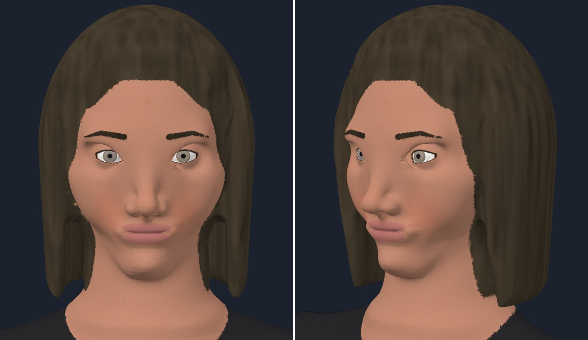
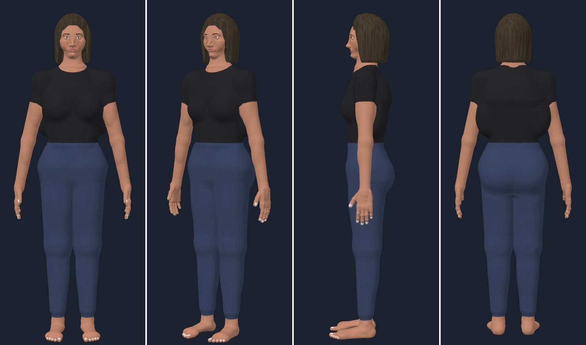
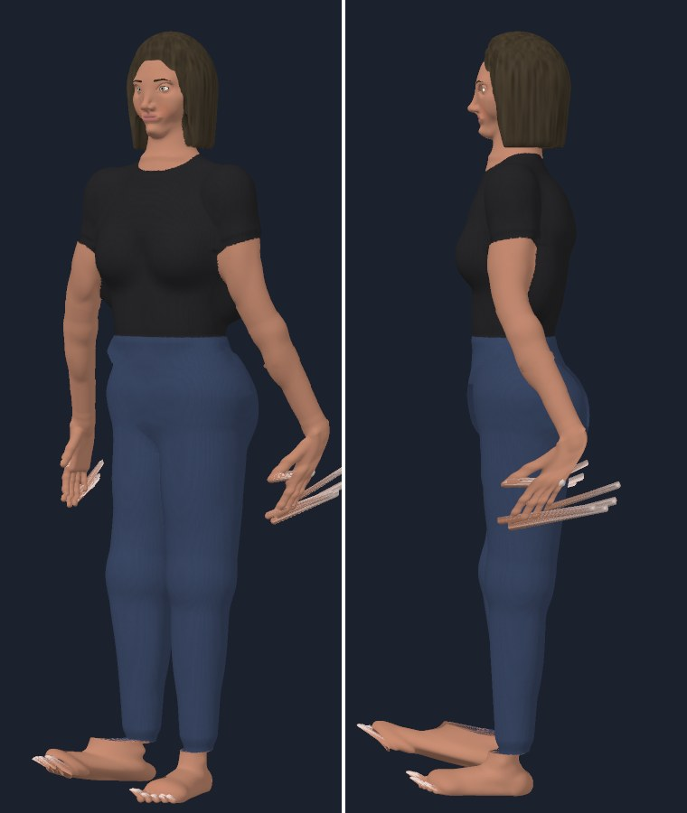
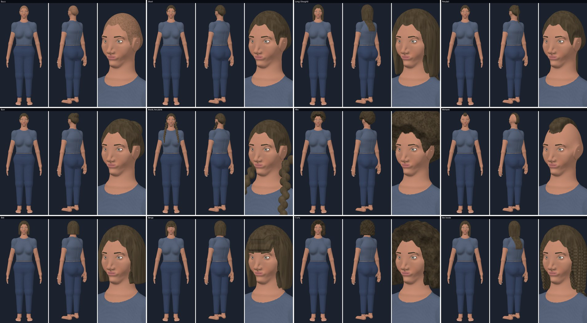
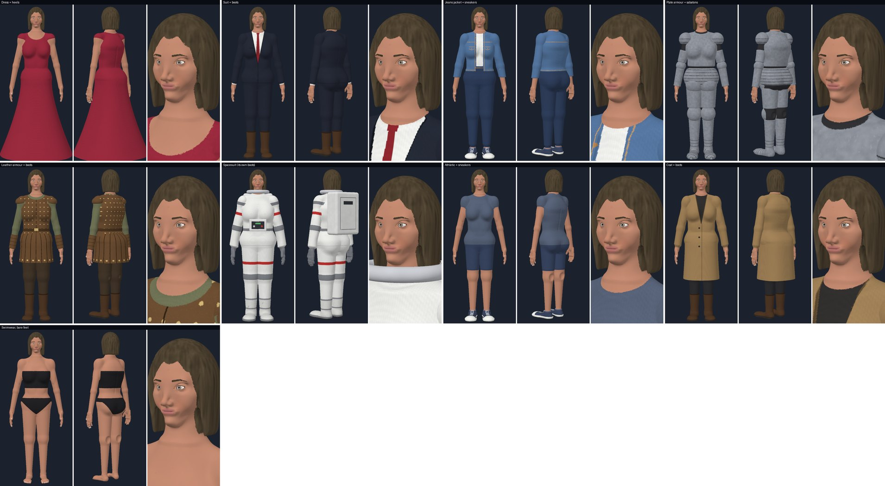
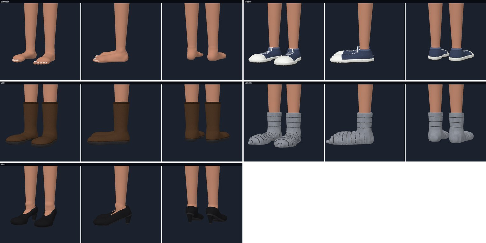
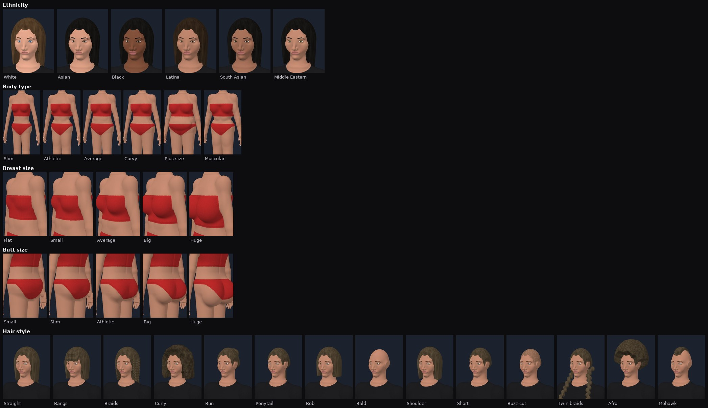

Overview #
One inventory of what the avatar side of 3D Mega Hub actually contains: which appearance options exist and
where, what the rig and the animation library are, what the prepared avatar mylove_rig_prepared.glb contains,
what has been proved to work and on what, and what is missing. Every status uses one of six labels and names its evidence.
female.glb, a static sample
all procedural, none are files
15 clips + rest, authored in C++
in every generated avatar
a skin, but nothing to play
one pose change proved on the CI emulator
The short version
- Appearance. There is no library of hair, clothing or skin files and there never was (G2): every option is a procedural preset inside the AvatarForge C++ engine. The app offers all of them in a creator laid out after the owner's "Create Your Avatar" guide images: a rail of sections beside the avatar, a picture of every preset, colour dots and sliders (IMPLEMENTED IN SOURCE; compiled, linted and unit-tested by CI C3, not yet run on a phone). Every preset is also reachable from a prompt (REAL + VERIFIED H8).
- Animation. The engine has a real skeleton, skin weights and 15 authored clips, and writes all of them into every GLB it
exports. Since
b636f23an avatar keeps them when its GLB is loaded back (REAL + VERIFIED H5). Sincea5e93a8the GLES renderer plays them itself by GPU skinning, and the creator has the controls: a strip of animations under the avatar and a Motion section with play, pause, stop, loop and speed (REAL + VERIFIED one pose change proved through the production view on the CI emulator E2). Nobody has watched one play on a phone. - Why the earlier build crashed. The owner's phone report on the
041e31dbuild was "animation crashes and no built in controls" (P2). The only way that build offered to see a generated avatar move was to send it to the Filament preview, whose loader reserves morph storage for every vertex of every target: several hundred megabytes for these avatars. That road is closed: the preview is never given such a file (REAL + VERIFIED unit tests, C3). The cause was found by reading the code; no crash log was sent, so it is the likely cause, not a proved one. - Imported GLB animation. A file from elsewhere that carries its own clips opens in the Filament preview, which has playback controls (IMPLEMENTED IN SOURCE). Since
ff9e6baa test opens a generated rigged figure in it on the CI emulator: the clips are listed by their names and the tapped one plays (REAL + VERIFIED). Pause, loop, speed and the slider have no test, and none of it has been used on a phone. The prepared avatar has no clips in it; a small public file that has, the Khronos sampleCesiumMan.glb, sits in one of the owner's other repositories (donor projects). - Prepared avatar. Retrieved from Dropbox and inspected byte for byte: 144,073 triangles, one WebP-textured material, a 20-joint skin whose own metadata says "approximate_unverified … Rig deformation and retargeting have not been tested", 0 animation clips, no morph targets. It displays as a static model. See the compatibility report.
- Avatar quality. The generator's face, eyes, hairline and garment edges were rebuilt in this session; renders are in
the gallery. They are host software renders of the engine's output, not phone captures. Every preset was generated and looked at:
all 27 hair, outfit and footwear presets look like what they are named in those renders (H7); 14 of them were rebuilt in
9519eaeand five were added in2920265. - The owner's picture reference. On 2026-11-15 the owner sent three screenshots of a dark picture creator and eight body references with the words "These are very important". Since
2920265the creator offers the choices those screenshots show, each connected to the engine: six starting looks ("Ethnicity"), body type, breast size, butt size, hair colour and fourteen hair styles as picture cards, a Face section with eye colour and seven face sliders, a swimwear outfit, and a dark look (IMPLEMENTED IN SOURCE; every card generated on the host and looked at H9; never seen on a phone). Bodies and faces of the quality of those references are not reached. - Other projects. 96 of the owner's repositories were searched. There is no wardrobe or animation library in any of them; there are 18 GLB files, four of which carry a skeleton and a clip (donor projects).
The six labels
REAL + VERIFIED seen working, with the evidence named. IMPLEMENTED IN SOURCE the code exists and compiles; nothing more is claimed. PARTIAL some of it works. UNVERIFIED nobody has checked. MISSING it does not exist. BLOCKED cannot proceed without something outside the code.
Click a label in the bar at the top to show only rows with that status. Evidence codes such as H5 link to
the evidence register. Source links are permanent links to commit 848632d.
Where everything is #
The avatar is made by one engine, AvatarForge, vendored into this repository as C++ under avatarforge-engine/. Nothing below is a separate application.
| What | Source | Note |
|---|---|---|
| Preset enumerations (C ABI) | afcore.h: af_hair_style · af_outfit · af_footwear · af_spec | The numbers every layer agrees on. |
| Preset enumerations (Kotlin) | AvatarSpec.kt: HairStyle · Outfit · AvatarSpec | What the app passes to the engine. |
| Body, face, hands, feet (shape) | af_field.cpp: torso · skull · faceFeatures · af_anatomy.cpp: solve | Signed-distance functions; proportions from the spec. |
| Hair (shape) | af_field.cpp: hairShape | One function, one switch over the thirteen styles. |
| Clothing, footwear, armour (shape) | clothUpper · clothLower · shoeShape · gearShape | Garments are offsets of the body, not separate meshes. |
| Which material a surface point gets | af_field.cpp: classifyRegion · af_mesh.h: regions | 13 regions: skin, two eyes, teeth, tongue, lips, hair, lash/brow, nail, upper cloth, lower cloth, shoe, gear. |
| Surface extraction | af_body.cpp: buildBodyMesh · af_isosurface.cpp | Lattice sampling, marching tetrahedra, refinement, projection. |
| UV atlas and texture bake | af_uv.cpp · af_texture.cpp: evaluateSkin · evaluateEye · evaluateCloth | Five baked maps: base colour, normal, metallic-roughness, occlusion, subsurface. |
| Skeleton, weights, blendshapes, clips | af_rig.cpp: skeleton · buildBlendshapes · clip library | All authored in code; no animation files. |
| Prompt words to presets | af_prompt.cpp: outfit words · hair words · skin words | A keyword parser, not a language model. |
| Engine entry points | af_engine.cpp: run_all · import_glb · evaluate_animation · apply_clip | |
| GLB writer and reader | af_glb.cpp · af_glb_read.cpp | Export: skin, 71 joints, 52 sparse morph targets, 15 animations, 5 PNG maps. |
| Native renderer (GLES) | render/af_gl.cpp · af_render.cpp · af_render_capi.cpp | Draws generated and imported avatars. Also plays an avatar's animations by GPU skinning (since 210ae9a). An older CPU clip player is still in the source and nothing calls it. |
| App: Avatar Studio screen | AvatarStudioScreen.kt · AppearanceControls.kt · GlbPreviewRouting.kt | Controls, generation, preview choice. |
| App: the two previews | AvatarForgeSurfaceView.kt · FilamentPreviewView.kt: animation controls | Native GLES view, which also plays an avatar's own animations; Filament gltfio view for files from elsewhere that carry clips. |
| App: creator panels and preset pictures | AvatarCreatorPanels.kt · PresetThumbnails · app/src/main/res/drawable-nodpi/preset_*.jpg | The rail, the preset cards, colour dots and the section panels; 51 pictures rendered by the host tool from the engine's own output. |
| App to engine bridge | AvatarForgeEngine.kt: generate | create → analyze_prompt → run_all → validate → export_glb. |
| Host tools | host_avatar_render.cpp · host_avatar_probe.cpp · animation_roundtrip_test.cpp | Generate, import, report, draw and test without a phone. |
Hair presets #
Thirteen styles plus "none". Each is a procedural preset: a case in hairShape() that describes the hair as a solid volume around the head. There are no hair meshes, cards or strands, and no hair texture files; colour and fibre shading come from the bake. Bob, bangs, curly and box braids were added in 2920265 for the owner's picture reference; the same commit merged the integration branch's hair work (a widow's point and temple recession in the hairline, a coil-scale field on the afro, clump channels down the back of hanging hair, a root-to-tip colour gradient) - the README says how each of those commits was carried over. Hair colour is a separate value (hair_tone), see appearance parameters.
| Style | What it is | Source | Prompt words | Connected to the app | Generated and drawn (host) | On the Samsung phone |
|---|---|---|---|---|---|---|
None (bald)AF_HAIR_NONE = 0 | Procedural preset a branch of one distance function; no file, no size | hairShape() enum · Kotlin | bald, shaved | IMPLEMENTED IN SOURCE a picture card in the creator since 210ae9a (a text picker since f90f326); compiled, linted and unit-tested by CI C3; not run on a phone REAL + VERIFIED a prompt selects it: host test H8 | REAL + VERIFIED generated on host in 38 s, 1,070,576 triangles H7. Seen in the render: a bare scalp, ears clear; generated for the picture the creator shows | UNVERIFIED never generated on the phone |
BuzzAF_HAIR_BUZZ = 1 | Procedural preset a branch of one distance function; no file, no size | hairShape() enum · Kotlin | buzz, buzzcut | IMPLEMENTED IN SOURCE a picture card in the creator since 210ae9a (a text picker since f90f326); compiled, linted and unit-tested by CI C3; not run on a phone REAL + VERIFIED a prompt selects it: host test H8 | REAL + VERIFIED generated on host in 45 s, 1,072,752 triangles H7. Seen in the render: cropped to stubble over the whole scalp, in the hair colour; the shape of the head shows | UNVERIFIED never generated on the phone |
ShortAF_HAIR_SHORT = 2 | Procedural preset a branch of one distance function; no file, no size | hairShape() enum · Kotlin | short hair | IMPLEMENTED IN SOURCE a picture card in the creator since 210ae9a (a text picker since f90f326); compiled, linted and unit-tested by CI C3; not run on a phone REAL + VERIFIED a prompt selects it: host test H8 | REAL + VERIFIED generated on host in 42 s, 1,079,380 triangles H7. Seen in the render: short cap, ears clear, clean hairline | UNVERIFIED never generated on the phone |
Medium (to the shoulders)AF_HAIR_MEDIUM = 3 | Procedural preset a branch of one distance function; no file, no size | hairShape() enum · Kotlin | medium / default | IMPLEMENTED IN SOURCE a picture card in the creator since 210ae9a (a text picker since f90f326); compiled, linted and unit-tested by CI C3; not run on a phone REAL + VERIFIED a prompt selects it: host test H8 | REAL + VERIFIED generated on host in 42 s, 1,148,034 triangles H7. Seen in the render: falls to the shoulders (the default; figures are from the diagnostic run, which also wrote the GLB) | UNVERIFIED phone test of 2026-11-15 used the APK built from 797d156, i.e. the generator before these changes |
Long ("Straight" in the creator)AF_HAIR_LONG = 4 | Procedural preset a branch of one distance function; no file, no size | hairShape() enum · Kotlin | long, flowing, waist, shoulder-length hair | IMPLEMENTED IN SOURCE a picture card in the creator since 210ae9a (a text picker since f90f326); compiled, linted and unit-tested by CI C3; not run on a phone REAL + VERIFIED a prompt selects it: host test H8 | REAL + VERIFIED generated on host in 51 s, 1,164,234 triangles H7. Seen in the render: falls past the shoulders and down the back; shallow channels divide the back into locks | UNVERIFIED never generated on the phone |
PonytailAF_HAIR_PONYTAIL = 5 | Procedural preset a branch of one distance function; no file, no size | hairShape() enum · Kotlin | ponytail | IMPLEMENTED IN SOURCE a picture card in the creator since 210ae9a (a text picker since f90f326); compiled, linted and unit-tested by CI C3; not run on a phone REAL + VERIFIED a prompt selects it: host test H8 | REAL + VERIFIED generated on host in 44 s, 1,087,022 triangles H7. Seen in the render: short cap with a thin tail down the back | UNVERIFIED never generated on the phone |
BunAF_HAIR_BUN = 6 | Procedural preset a branch of one distance function; no file, no size | hairShape() enum · Kotlin | bun | IMPLEMENTED IN SOURCE a picture card in the creator since 210ae9a (a text picker since f90f326); compiled, linted and unit-tested by CI C3; not run on a phone REAL + VERIFIED a prompt selects it: host test H8 | REAL + VERIFIED generated on host in 46 s, 1,082,722 triangles H7. Seen in the render: short cap with a bun at the back of the head | UNVERIFIED never generated on the phone |
Braids, two plaits ("Twin braids")AF_HAIR_BRAIDS = 7 | Procedural preset a branch of one distance function; no file, no size | hairShape() enum · Kotlin | braid, braids, locks, dreadlocks | IMPLEMENTED IN SOURCE a picture card in the creator since 210ae9a (a text picker since f90f326); compiled, linted and unit-tested by CI C3; not run on a phone REAL + VERIFIED a prompt selects it: host test H8 | REAL + VERIFIED generated on host in 49 s, 1,121,014 triangles H7. Seen in the render: hair drawn back into two plaits that hang in front of the shoulders to the chest; each plait is a row of beads, which reads as braiding | UNVERIFIED never generated on the phone |
AfroAF_HAIR_AFRO = 8 | Procedural preset a branch of one distance function; no file, no size | hairShape() enum · Kotlin | afro | IMPLEMENTED IN SOURCE a picture card in the creator since 210ae9a (a text picker since f90f326); compiled, linted and unit-tested by CI C3; not run on a phone REAL + VERIFIED a prompt selects it: host test H8 | REAL + VERIFIED generated on host in 48 s, 1,155,044 triangles H7. Seen in the render: a round mass about twice the width of the head with a fine curl texture and, since the coil field, a slightly uneven outline; the hairline across the forehead is uneven | UNVERIFIED never generated on the phone |
MohawkAF_HAIR_MOHAWK = 9 | Procedural preset a branch of one distance function; no file, no size | hairShape() enum · Kotlin | mohawk | IMPLEMENTED IN SOURCE a picture card in the creator since 210ae9a (a text picker since f90f326); compiled, linted and unit-tested by CI C3; not run on a phone REAL + VERIFIED a prompt selects it: host test H8 | REAL + VERIFIED generated on host in 43 s, 1,078,626 triangles H7. Seen in the render: a crest along the top with bare sides | UNVERIFIED never generated on the phone |
BobAF_HAIR_BOB = 10 | Procedural preset a branch of one distance function; no file, no size | hairShape() enum · Kotlin | bob | IMPLEMENTED IN SOURCE a picture card in the creator since 2920265; compiled, linted and unit-tested by CI C3; not run on a phone REAL + VERIFIED a prompt selects it: host test H8 | REAL + VERIFIED generated on host in 47 s, 1,118,752 triangles H7. Seen in the render: cut level at the jaw with a square edge, the nape clear | UNVERIFIED never generated on the phone |
BangsAF_HAIR_BANGS = 11 | Procedural preset a branch of one distance function; no file, no size | hairShape() enum · Kotlin | bangs, fringe | IMPLEMENTED IN SOURCE a picture card in the creator since 2920265; compiled, linted and unit-tested by CI C3; not run on a phone REAL + VERIFIED a prompt selects it: host test H8 | REAL + VERIFIED generated on host in 49 s, 1,129,014 triangles H7. Seen in the render: to the shoulders with a level fringe to just above the brows; in three-quarter view the fringe reads as a solid band | UNVERIFIED never generated on the phone |
CurlyAF_HAIR_CURLY = 12 | Procedural preset a branch of one distance function; no file, no size | hairShape() enum · Kotlin | curls | IMPLEMENTED IN SOURCE a picture card in the creator since 2920265; compiled, linted and unit-tested by CI C3; not run on a phone REAL + VERIFIED a prompt selects it: host test H8 | REAL + VERIFIED generated on host in 51 s, 1,168,424 triangles H7. Seen in the render: a full mass to the shoulders with an uneven, coiled outline and a curl texture | UNVERIFIED never generated on the phone |
Box braids ("Braids" in the creator)AF_HAIR_BOX_BRAIDS = 13 | Procedural preset a branch of one distance function; no file, no size | hairShape() enum · Kotlin | none | IMPLEMENTED IN SOURCE a picture card in the creator since 2920265; compiled, linted and unit-tested by CI C3; not run on a phone MISSING no prompt word; the creator only | REAL + VERIFIED generated on host in 49 s, 1,170,960 triangles H7. Seen in the render: long hair divided all round into ropes about 2 cm wide, each banded light and dark: reads as many braids. The bands are paint, not plaiting, and there is no parting on the scalp | UNVERIFIED never generated on the phone |
Licence and provenance: written for this project inside AvatarForge (repository davealone69-gif/AvatarForge); the repository carries no LICENSE file, so no licence is stated.
Clothing and footwear presets #
Ten outfits plus the unclothed base, and four kinds of footwear plus bare feet. A garment here is the body's own surface moved outwards by the cloth's thickness and kept inside the garment's outline. That makes every garment fit every body, and it also means a garment cannot be taken off one avatar and put on another: there is no garment mesh to move. Clothing colour is cloth_tone; armour colour and metalness are gear_tone and gear_metalness. Since 9519eae the parts inside a garment (the shirt and tie in a jacket's opening, stitching, buttons, soles, laces, the joints between plates) are painted by the texture bake from apparelPart(), armour and space-suit hardware is built per kit in gearField(), each outfit has its own colours while the clothing colour is left at "Auto", and heels pitch the foot about a raised ankle (footLocal()).
| Outfit | What it is | Source | Prompt words | Connected to the app | Generated and drawn (host) | On the Samsung phone |
|---|---|---|---|---|---|---|
None (unclothed base)AF_OUTFIT_NONE = 0 | Procedural preset upper garment + lower garment; no file | clothUpper() · clothLower() enum · Kotlin | nude, naked, bare, unclothed lower: - | BLOCKED not offered: the unclothed base needs the adult-mode confirmation the app does not expose | UNVERIFIED not generated in this session | UNVERIFIED never generated on the phone |
T-shirt (with jeans)AF_OUTFIT_TSHIRT = 1 | Procedural preset upper garment + lower garment; no file | clothUpper() · clothLower() enum · Kotlin | tshirt, t-shirt, tee, shirt lower: jeans | IMPLEMENTED IN SOURCE a picture card in the creator since 210ae9a (a text picker since f90f326); compiled, linted and unit-tested by CI C3; not run on a phone REAL + VERIFIED a prompt selects it: host test H8 | REAL + VERIFIED generated on host in 42 s, 1,148,034 triangles H7. Seen in the render: T-shirt and jeans with a clean collar and a stitched waistband | UNVERIFIED never generated on the phone |
Dress (full length)AF_OUTFIT_DRESS = 2 | Procedural preset upper garment + lower garment; no file | clothUpper() · clothLower() enum · Kotlin | dress, gown lower: dress lining | IMPLEMENTED IN SOURCE a picture card in the creator since 210ae9a (a text picker since f90f326); compiled, linted and unit-tested by CI C3; not run on a phone REAL + VERIFIED a prompt selects it: host test H8 | REAL + VERIFIED generated on host in 88 s, 1,957,312 triangles H7. Seen in the render: a crimson gown: fitted bodice with cap sleeves and a scoop neck, a skirt that flares from the hips to the floor | UNVERIFIED never generated on the phone |
SuitAF_OUTFIT_SUIT = 3 | Procedural preset upper garment + lower garment; no file | clothUpper() · clothLower() enum · Kotlin | suit, tuxedo, business lower: trousers | IMPLEMENTED IN SOURCE a picture card in the creator since 210ae9a (a text picker since f90f326); compiled, linted and unit-tested by CI C3; not run on a phone REAL + VERIFIED a prompt selects it: host test H8 | REAL + VERIFIED generated on host in 53 s, 1,217,612 triangles H7. Seen in the render: a navy jacket open in a V over a white shirt and red tie, front seam, two buttons, shirt cuffs, matching trousers. Lapels are a painted edge, not folded cloth | UNVERIFIED never generated on the phone |
Jeans and jacketAF_OUTFIT_JEANS_JACKET = 4 | Procedural preset upper garment + lower garment; no file | clothUpper() · clothLower() enum · Kotlin | jeans, denim, jacket, hoodie, sweater lower: jeans | IMPLEMENTED IN SOURCE a picture card in the creator since 210ae9a (a text picker since f90f326); compiled, linted and unit-tested by CI C3; not run on a phone REAL + VERIFIED a prompt selects it: host test H8 | REAL + VERIFIED generated on host in 53 s, 1,222,826 triangles H7. Seen in the render: a waist-length denim jacket worn open over a white T-shirt, with tan stitching, a yoke, flap pockets and buttons, and darker jeans | UNVERIFIED the phone avatar of 2026-11-15 wore this outfit, built by the old generator |
Plate armourAF_OUTFIT_ARMOR_PLATE = 5 | Procedural preset upper garment + lower garment + plates/hardware; no file | clothUpper() · clothLower() · gearShape() enum · Kotlin | armour, armor, plate, cuirass, knight, breastplate lower: greaves | IMPLEMENTED IN SOURCE a picture card in the creator since 210ae9a (a text picker since f90f326); compiled, linted and unit-tested by CI C3; not run on a phone REAL + VERIFIED a prompt selects it: host test H8 | REAL + VERIFIED generated on host in 61 s, 1,302,752 triangles H7. Seen in the render: a steel harness over black arming clothes: breastplate, hooped fauld and tassets, pauldrons, arm and leg plates, knee and elbow cops. The plates are rounded and thick | UNVERIFIED never generated on the phone |
Leather armourAF_OUTFIT_ARMOR_LEATHER = 6 | Procedural preset upper garment + lower garment + plates/hardware; no file | clothUpper() · clothLower() · gearShape() enum · Kotlin | leather, ranger, rogue lower: leather legs | IMPLEMENTED IN SOURCE a picture card in the creator since 210ae9a (a text picker since f90f326); compiled, linted and unit-tested by CI C3; not run on a phone REAL + VERIFIED a prompt selects it: host test H8 | REAL + VERIFIED generated on host in 71 s, 1,298,564 triangles H7. Seen in the render: a brown studded jerkin, belt with a brass buckle, a skirt of straps, shoulder caps and strapped bracers over an olive tunic and brown trousers | UNVERIFIED never generated on the phone |
SpacesuitAF_OUTFIT_SPACESUIT = 7 | Procedural preset upper garment + lower garment + plates/hardware; no file | clothUpper() · clothLower() · gearShape() enum · Kotlin | spacesuit, space, astronaut, hazmat, exosuit lower: suit legs | IMPLEMENTED IN SOURCE a picture card in the creator since 210ae9a (a text picker since f90f326); compiled, linted and unit-tested by CI C3; not run on a phone REAL + VERIFIED a prompt selects it: host test H8 | REAL + VERIFIED generated on host in 63 s, 1,624,658 triangles H7. Seen in the render: a white pressure suit with a neck ring, chest control unit, life-support pack, grey gloves, joint bands, red stripes and its own boots. There is no helmet | UNVERIFIED never generated on the phone |
AthleticAF_OUTFIT_ATHLETIC = 8 | Procedural preset upper garment + lower garment; no file | clothUpper() · clothLower() enum · Kotlin | sportswear, athletic, gym, running lower: shorts | IMPLEMENTED IN SOURCE a picture card in the creator since 210ae9a (a text picker since f90f326); compiled, linted and unit-tested by CI C3; not run on a phone REAL + VERIFIED a prompt selects it: host test H8 | REAL + VERIFIED generated on host in 46 s, 1,124,146 triangles H7. Seen in the render: short-sleeved top, shorts and trainers; uneven shading behind the knees | UNVERIFIED never generated on the phone |
CoatAF_OUTFIT_COAT = 9 | Procedural preset upper garment + lower garment; no file | clothUpper() · clothLower() enum · Kotlin | coat, trench, overcoat, cloak lower: trousers | IMPLEMENTED IN SOURCE a picture card in the creator since 210ae9a (a text picker since f90f326); compiled, linted and unit-tested by CI C3; not run on a phone REAL + VERIFIED a prompt selects it: host test H8 | REAL + VERIFIED generated on host in 63 s, 1,373,156 triangles H7. Seen in the render: a camel coat to the knee, open in a V over a dark layer, three buttons, dark trousers | UNVERIFIED never generated on the phone |
Swimwear (two-piece)AF_OUTFIT_SWIMWEAR = 10 | Procedural preset upper garment + lower garment; no file | clothUpper() · clothLower() enum · Kotlin | swimwear, swimsuit, bikini lower: briefs; trunks on a male body, which has no top | IMPLEMENTED IN SOURCE a picture card in the creator since 2920265; compiled, linted and unit-tested by CI C3; not run on a phone REAL + VERIFIED a prompt selects it: host test H8 | REAL + VERIFIED generated on host in 39 s, 1,075,914 triangles H7. Seen in the render: a black bandeau across the bust and briefs cut high at the hip; shoulders, waist and legs bare. The edges are drawn by the texture and are slightly ragged close up | UNVERIFIED never generated on the phone |
Footwear
| Footwear | What it is | Source | Prompt words | Connected to the app | Generated and drawn (host) | On the Samsung phone |
|---|---|---|---|---|---|---|
None (bare feet)AF_FOOTWEAR_NONE = 0 | Procedural preset | shoeShape() · enum | - | IMPLEMENTED IN SOURCE a picture card in the creator since 210ae9a (a text picker since f90f326); compiled, linted and unit-tested by CI C3; not run on a phone | REAL + VERIFIED generated on host in 41 s, 1,035,148 triangles H7. Seen in the render: bare feet with five toes and pale nails generated with the athletic outfit; feet drawn close up | UNVERIFIED never generated on the phone |
SneakerAF_FOOTWEAR_SNEAKER = 1 | Procedural preset | shoeShape() · enum | sneakers, trainers, shoes, runners | IMPLEMENTED IN SOURCE a picture card in the creator since 210ae9a (a text picker since f90f326); compiled, linted and unit-tested by CI C3; not run on a phone REAL + VERIFIED a prompt selects it: host test H8 | REAL + VERIFIED generated on host in 42 s, 1,077,568 triangles H7. Seen in the render: a navy canvas trainer with a white rubber toe cap, white sole and laces generated with the athletic outfit; feet drawn close up | UNVERIFIED never generated on the phone |
BootAF_FOOTWEAR_BOOT = 2 | Procedural preset | shoeShape() · enum | boots, boot | IMPLEMENTED IN SOURCE a picture card in the creator since 210ae9a (a text picker since f90f326); compiled, linted and unit-tested by CI C3; not run on a phone REAL + VERIFIED a prompt selects it: host test H8 | REAL + VERIFIED generated on host in 45 s, 1,090,762 triangles H7. Seen in the render: a brown leather boot to mid-calf with a dark sole and welt generated with the athletic outfit; feet drawn close up | UNVERIFIED never generated on the phone |
SabatonAF_FOOTWEAR_SABATON = 3 | Procedural preset | shoeShape() · enum | sabatons, greaves | IMPLEMENTED IN SOURCE a picture card in the creator since 210ae9a (a text picker since f90f326); compiled, linted and unit-tested by CI C3; not run on a phone REAL + VERIFIED a prompt selects it: host test H8 | REAL + VERIFIED generated on host in 36 s, 1,092,074 triangles H7. Seen in the render: steel plates over the foot with a pointed toe, lames across the instep and hoops round the ankle generated with the athletic outfit; feet drawn close up | UNVERIFIED never generated on the phone |
HeelAF_FOOTWEAR_HEEL = 4 | Procedural preset | shoeShape() · enum | heels, stilettos, high-heels | IMPLEMENTED IN SOURCE a picture card in the creator since 210ae9a (a text picker since f90f326); compiled, linted and unit-tested by CI C3; not run on a phone REAL + VERIFIED a prompt selects it: host test H8 | REAL + VERIFIED generated on host in 28 s, 1,037,330 triangles H7. Seen in the render: a black court shoe on a block heel about 6 cm high; the foot is pitched and the toes are flat. The ankle is raised 4.6 cm and the leg shortened by as much, so stature stays as asked generated with the athletic outfit; feet drawn close up | UNVERIFIED never generated on the phone |
Skin, colours, body and face #
Everything else that changes how an avatar looks is a number in one structure, af_spec / AvatarSpec. The table says, for each, whether the app lets you set it.
| Parameter | Field and range | Source | Connected to the app | Generated and drawn (host) | On the Samsung phone |
|---|---|---|---|---|---|
| Skin tone (melanin) | skin_melanin 0–1, default 0.35 | afcore.h · AvatarSpec.kt · evaluateSkin() | IMPLEMENTED IN SOURCE slider since f90f326 REAL + VERIFIED prompt words pale / olive / tan / brown / dark | PARTIAL default value drawn H4; other values not drawn | UNVERIFIED |
| Skin colour (explicit) | skin_tone[3] linear RGB, 0 = derive from melanin | afcore.h · AvatarSpec.kt | MISSING no control; reachable only by code | UNVERIFIED | UNVERIFIED |
| Hair colour | hair_tone[3] linear RGB, 0 = engine default | afcore.h · AvatarSpec.kt | IMPLEMENTED IN SOURCE 12 colour tiles since 2920265 (brown, black, blonde, ginger and pink first, as in the picture reference); 8 swatches since f90f326 REAL + VERIFIED prompt colour words | PARTIAL default dark brown drawn H4; swatch values not drawn | UNVERIFIED |
| Clothing colour | cloth_tone[3] | afcore.h · AvatarSpec.kt · bake | IMPLEMENTED IN SOURCE 7 swatches since f90f326 REAL + VERIFIED prompt colour before a garment word | PARTIAL "black t-shirt" drawn black H4; which garments a swatch recolours is not checked | UNVERIFIED |
| Armour colour, metalness | gear_tone[3], gear_metalness | afcore.h · AvatarSpec.kt | MISSING no control; reachable only by code | UNVERIFIED | UNVERIFIED |
| Cloth roughness | cloth_roughness | afcore.h · AvatarSpec.kt | MISSING no control; reachable only by code | UNVERIFIED | UNVERIFIED |
| Body: sex | sex: unspecified, male, female | afcore.h · Kotlin | IMPLEMENTED IN SOURCE a chip in the creator's Body section since 210ae9a (a text picker since f90f326); compiled, linted and unit-tested by CI C3; not run on a phone | PARTIAL female drawn H4; male and unspecified not drawn since the generator changes | UNVERIFIED phone test of 2026-11-15 used the APK built from 797d156, i.e. the generator before these changes |
| Body type | build: average, slim, athletic, muscular, heavy, curvy (curvy added in 2920265), sent together with the muscle and body_fat values that go with the name. Six body types in the creator: Slim, Athletic, Average, Curvy, Plus size, Muscular | afcore.h · Kotlin · BodyType | IMPLEMENTED IN SOURCE a picture card in the creator since 2920265; compiled, linted and unit-tested by CI C3; not run on a phone | REAL + VERIFIED all six generated in swimwear and looked at H9; the curvy build's smaller waist-to-hip ratio is a host test H1 | UNVERIFIED phone test of 2026-11-15 used the APK built from 797d156, i.e. the generator before these changes |
| Body: height | height_m, default 1.75 | afcore.h · AvatarSpec.kt | IMPLEMENTED IN SOURCE slider 1.45–2.05 m since f90f326 REAL + VERIFIED "175 cm tall" in a prompt H1 | REAL + VERIFIED 1.75 m asked, 1.769 m built H2 | UNVERIFIED |
| Breast size | bust 0–1. Five sizes in the creator: Flat 0.04, Small 0.24, Average 0.45, Big 0.70, Huge 1.00. Until 2920265 the engine read this field and then overwrote it for every female body, so it did nothing; a measured bust girth (chest_cm) still decides when one is given | afcore.h · AvatarSpec.kt · af_anatomy.cpp · BustSize | IMPLEMENTED IN SOURCE a picture card in the creator since 2920265; compiled, linted and unit-tested by CI C3; not run on a phone shown for a female or unspecified body | REAL + VERIFIED five sizes generated and looked at H9; each stands further forward than the one before, 64 mm from flat to huge: host test H1 | UNVERIFIED |
| Butt size | glute -1..+1 about the build's own (0), new in 2920265. Five sizes in the creator: Small -0.90, Slim -0.45, Athletic 0, Big +0.50, Huge +1.00 | afcore.h · AvatarSpec.kt · af_field.cpp: torso() · GluteSize | IMPLEMENTED IN SOURCE a picture card in the creator since 2920265; compiled, linted and unit-tested by CI C3; not run on a phone | REAL + VERIFIED five sizes generated and looked at H9; each stands further back than the one before, 65 mm from small to huge: host test H1 | UNVERIFIED |
| Body: age | age_years 16–70, default 30. Bust and glute are honoured for 18 and over only: below that the engine uses its defaults whatever is asked (host test H1) | afcore.h · AvatarSpec.kt · af_anatomy.cpp | IMPLEMENTED IN SOURCE no control: every avatar the creator builds is 30, unit-tested C3 | UNVERIFIED not drawn at any other age | UNVERIFIED |
| Body: 13 tape measurements | neck, chest, underbust, waist, hip, thigh, calf, bicep, forearm, wrist, shoulder width, inseam, head circumference (cm) | afcore.h · AvatarSpec.kt | MISSING no control; reachable only by code | UNVERIFIED a perimeter test exists in the engine; not run as part of this inventory | UNVERIFIED |
| Face shape | face[8], new in 2920265: seven offsets from the default face, each -1..+1 with 0 the default - nose width, nose bridge, lip fullness, eye tilt, eye opening, cheekbones, jaw width (the eighth slot is reserved) | af_face_param · faceFeatures() · skull() · FaceParam | IMPLEMENTED IN SOURCE seven sliders in the creator's Face section since 2920265; compiled and unit-tested by CI C3; not run on a phone | PARTIAL six combinations drawn as the six looks H9; the offsets are clamped, both ends of every one still give a head, and the nose-width offset changes the width of the nose: host test H1. No offset was drawn alone at each end | UNVERIFIED |
| Eye colour | eye_tone[3] linear RGB, new in 2920265; 0 = derived from the skin tone as before | afcore.h · AvatarSpec.kt · evaluateEye() | IMPLEMENTED IN SOURCE 7 colour tiles in the Face section since 2920265 | PARTIAL blue, dark brown, brown and hazel drawn on the six looks H9; green and grey not drawn | UNVERIFIED |
| Starting looks ("Ethnicity") | Not an engine field: six presets in the app - White, Asian, Black, Latina / Latino, South Asian, Middle Eastern - each of which sets the skin tone, the hair colour, the eye colour and the seven face offsets, and nothing else. Every value can be changed afterwards | Ethnicity · LookPanel | IMPLEMENTED IN SOURCE a picture card in the creator since 2920265; compiled, linted and unit-tested by CI C3; not run on a phone | REAL + VERIFIED all six generated with exactly the preset's values and looked at H9 | UNVERIFIED |
| Photo input | af_engine_analyze_images: framing, proportions and colours only | afcore.h | MISSING not offered in the app; the engine states it does not reconstruct a face | UNVERIFIED | UNVERIFIED |
| Seed | seed, default 1337 | afcore.h · AvatarSpec.kt | MISSING no control; reachable only by code | UNVERIFIED | UNVERIFIED |
Materials and textures
There are no texture image files in the repository. For every avatar the engine bakes five maps (base colour, normal, metallic-roughness, occlusion, subsurface) from procedural material functions and embeds them as PNG in the GLB. One material per region; the exported file has 13 materials and 9–10 primitives.
| Region | Material function | Kind |
|---|---|---|
skin | evaluateSkin() | Procedural: colour, roughness and relief computed per texel |
eye_left / eye_right | evaluateEye() | Procedural: colour, roughness and relief computed per texel |
teeth | evaluateTeeth() | Procedural: colour, roughness and relief computed per texel |
tongue | evaluateTongue() | Procedural: colour, roughness and relief computed per texel |
lips | evaluateLips() | Procedural: colour, roughness and relief computed per texel |
nail | evaluateNail() | Procedural: colour, roughness and relief computed per texel |
cloth_upper / cloth_lower | evaluateCloth() | Procedural: colour, roughness and relief computed per texel |
shoe | evaluateShoe() | Procedural: colour, roughness and relief computed per texel |
gear | evaluateGear() | Procedural: colour, roughness and relief computed per texel |
hair, lash (brows, lash line) | evaluateSurface() | Procedural |
Morph targets and blendshapes #
Every generated avatar carries 52 facial blendshapes with the ARKit names, built by Rig::buildBlendshapes() and written to the GLB as sparse morph targets. The engine can apply weights (af_engine_apply_blendshapes).
| Fact | Status |
|---|---|
| 52 channels exist in the generated avatar and in its GLB | REAL + VERIFIED counted by the engine and by the GLB test H2 H1 |
| The shapes look right (a blink closes the eye, a smile is a smile) | UNVERIFIED no blendshape has been drawn with a non-zero weight since the face was rebuilt; the mouth is now closed by default, which the jaw and mouth shapes were not re-checked against |
| A control in the app to move them | MISSING |
| The native renderer applies them while drawing | MISSING the renderer draws the stored vertices only |
Body morph targets on the bundled sample female.glb (7: muscle, weight, height, shoulder width, hip width, bust, limb length) | REAL + VERIFIED present in the file G1 MISSING no control in the app drives them |
The 52 names
browDownLeft · browDownRight · browInnerUp · browOuterUpLeft · browOuterUpRight · cheekPuff · cheekSquintLeft · cheekSquintRight · eyeBlinkLeft · eyeBlinkRight · eyeLookDownLeft · eyeLookDownRight · eyeLookInLeft · eyeLookInRight · eyeLookOutLeft · eyeLookOutRight · eyeLookUpLeft · eyeLookUpRight · eyeSquintLeft · eyeSquintRight · eyeWideLeft · eyeWideRight · jawForward · jawLeft · jawOpen · jawRight · mouthClose · mouthDimpleLeft · mouthDimpleRight · mouthFrownLeft · mouthFrownRight · mouthFunnel · mouthLeft · mouthLowerDownLeft · mouthLowerDownRight · mouthPressLeft · mouthPressRight · mouthPucker · mouthRight · mouthRollLower · mouthRollUpper · mouthShrugLower · mouthShrugUpper · mouthSmileLeft · mouthSmileRight · mouthStretchLeft · mouthStretchRight · mouthUpperUpLeft · mouthUpperUpRight · noseSneerLeft · noseSneerRight · tongueOut
Animation inventory #
The sixteen native entries. They are authored in C++ as keyframed joint rotations (the clip library), not loaded from animation files. The order in an exported GLB is idle, breathe, walk, jog, run, squat, jump, wave, punch, kick, pushup, t_pose, a_pose, sit, turn_360.
| Clip | Length | Source | Written to the GLB | Engine plays it back correctly (host test) | A posed frame has been looked at | Visible playback in the app |
|---|---|---|---|---|---|---|
restAF_CLIP_REST = 0 | 0.00 s the bind pose | af_rig.cpp · enum | not exported: it is the bind pose | REAL + VERIFIED identity matrices H5 | UNVERIFIED no frame drawn | MISSING no playback in the app |
idleAF_CLIP_IDLE = 1 | 4.00 s looping motion | af_rig.cpp · enum | REAL + VERIFIED in the exported GLB, 30 Hz H3 | REAL + VERIFIED evaluated after import and compared with the generating engine at three times, within 0.2 mm H5 | UNVERIFIED no frame drawn | MISSING no playback in the app |
breatheAF_CLIP_BREATHE = 2 | 5.00 s looping motion | af_rig.cpp · enum | REAL + VERIFIED in the exported GLB, 30 Hz H3 | REAL + VERIFIED evaluated after import and compared with the generating engine at three times, within 0.2 mm H5 | UNVERIFIED no frame drawn | MISSING no playback in the app |
walkAF_CLIP_WALK = 3 | 1.10 s looping motion | af_rig.cpp · enum | REAL + VERIFIED in the exported GLB, 30 Hz H3 | REAL + VERIFIED evaluated after import and compared with the generating engine at three times, within 0.2 mm H5 | REAL + VERIFIED one frame drawn on the host at 0.30 s H4 | MISSING no playback in the app |
jogAF_CLIP_JOG = 5 | 0.72 s looping motion | af_rig.cpp · enum | REAL + VERIFIED in the exported GLB, 30 Hz H3 | REAL + VERIFIED evaluated after import and compared with the generating engine at three times, within 0.2 mm H5 | UNVERIFIED no frame drawn | MISSING no playback in the app |
runAF_CLIP_RUN = 4 | 0.62 s looping motion | af_rig.cpp · enum | REAL + VERIFIED in the exported GLB, 30 Hz H3 | REAL + VERIFIED evaluated after import and compared with the generating engine at three times, within 0.2 mm H5 | UNVERIFIED no frame drawn | MISSING no playback in the app |
squatAF_CLIP_SQUAT = 6 | 2.40 s motion | af_rig.cpp · enum | REAL + VERIFIED in the exported GLB, 30 Hz H3 | REAL + VERIFIED evaluated after import and compared with the generating engine at three times, within 0.2 mm H5 | UNVERIFIED no frame drawn | MISSING no playback in the app |
jumpAF_CLIP_JUMP = 7 | 1.60 s motion, moves the root | af_rig.cpp · enum | REAL + VERIFIED in the exported GLB, 30 Hz H3 | REAL + VERIFIED evaluated after import and compared with the generating engine at three times, within 0.2 mm H5 | UNVERIFIED no frame drawn | MISSING no playback in the app |
waveAF_CLIP_WAVE = 8 | 2.20 s motion | af_rig.cpp · enum | REAL + VERIFIED in the exported GLB, 30 Hz H3 | REAL + VERIFIED evaluated after import and compared with the generating engine at three times, within 0.2 mm H5 | UNVERIFIED no frame drawn | MISSING no playback in the app |
punchAF_CLIP_PUNCH = 9 | 0.90 s motion | af_rig.cpp · enum | REAL + VERIFIED in the exported GLB, 30 Hz H3 | REAL + VERIFIED evaluated after import and compared with the generating engine at three times, within 0.2 mm H5 | UNVERIFIED no frame drawn | MISSING no playback in the app |
kickAF_CLIP_KICK = 10 | 1.10 s motion | af_rig.cpp · enum | REAL + VERIFIED in the exported GLB, 30 Hz H3 | REAL + VERIFIED evaluated after import and compared with the generating engine at three times, within 0.2 mm H5 | UNVERIFIED no frame drawn | MISSING no playback in the app |
t_poseAF_CLIP_T_POSE = 11 | 0.10 s a held pose | af_rig.cpp · enum | REAL + VERIFIED in the exported GLB, 30 Hz H3 | REAL + VERIFIED evaluated after import and compared with the generating engine at three times, within 0.2 mm H5 | UNVERIFIED no frame drawn | MISSING no playback in the app |
a_poseAF_CLIP_A_POSE = 12 | 0.10 s a held pose | af_rig.cpp · enum | REAL + VERIFIED in the exported GLB, 30 Hz H3 | REAL + VERIFIED evaluated after import and compared with the generating engine at three times, within 0.2 mm H5 | UNVERIFIED no frame drawn | MISSING no playback in the app |
sitAF_CLIP_SIT = 13 | 0.10 s a held pose | af_rig.cpp · enum | REAL + VERIFIED in the exported GLB, 30 Hz H3 | REAL + VERIFIED evaluated after import and compared with the generating engine at three times, within 0.2 mm H5 | UNVERIFIED no frame drawn | MISSING no playback in the app |
turn_360AF_CLIP_TURN_360 = 14 | 2.00 s motion | af_rig.cpp · enum | REAL + VERIFIED in the exported GLB, 30 Hz H3 | REAL + VERIFIED evaluated after import and compared with the generating engine at three times, within 0.2 mm H5 | UNVERIFIED no frame drawn | MISSING no playback in the app |
pushupAF_CLIP_PUSHUP = 15 | 2.00 s motion | af_rig.cpp · enum | REAL + VERIFIED in the exported GLB, 30 Hz H3 | REAL + VERIFIED evaluated after import and compared with the generating engine at three times, within 0.2 mm H5 | UNVERIFIED no frame drawn | MISSING no playback in the app |
Read this row of facts together. The clips exist, are exported, survive import and deform the mesh correctly in an automated test. One still frame of the walk has been drawn on the host, and on the CI emulator the production view showed a different picture once an animation was started E2. No clip has been watched playing on a phone. The player and its controls are described under animation systems.
Animation systems: source, UI, tests, runtime, phone #
Five separate questions for each system, because they have five different answers.
| System | Implemented in source | Connected to UI | Automated test | Seen at runtime (host or emulator) | On the Samsung SM-S921B |
|---|---|---|---|---|---|
| Skeleton: 71 joints, parent links, rest pose | REAL + VERIFIED af_rig.cpp | n/a | REAL + VERIFIED H5 H1 | REAL + VERIFIED listed from the engine H3 | PARTIAL the exported file carried 71 joints; the renderer reported 0 because import dropped them (old build) P1 |
| Skin weights: 4 joints per vertex | REAL + VERIFIED af_rig.cpp | n/a | REAL + VERIFIED weights normalised, every vertex weighted H5 | REAL + VERIFIED 621,802 of 621,802 vertices weighted H3 | UNVERIFIED |
| Animation clips (the 15 above) | REAL + VERIFIED | IMPLEMENTED IN SOURCE a strip of them under the avatar and the Motion section AvatarStudioScreen.kt | REAL + VERIFIED H5 | REAL + VERIFIED listed and one played through the production view E2 | UNVERIFIED |
| Keyframes: 30 Hz rotation tracks, one root translation track | REAL + VERIFIED | n/a | REAL + VERIFIED 708 rotation keys read from the file equal engine playback H5 | REAL + VERIFIED H5 | UNVERIFIED |
| Export: skin, joints, inverse bind matrices, clips in the GLB | REAL + VERIFIED af_glb.cpp | REAL + VERIFIED every generation exports | REAL + VERIFIED H5 H1 | REAL + VERIFIED H2 | REAL + VERIFIED the phone wrote an 83 MB GLB with the old generator P1 |
| Re-import of an AvatarForge GLB keeps skeleton and clips | REAL + VERIFIED af_engine.cpp: adoptImportedRig since b636f23 | automatic | REAL + VERIFIED H5 | REAL + VERIFIED 71 joints, 15 animations after import H3 | UNVERIFIED the published APK has not been run on the phone |
| Import of a foreign rigged GLB (other skeleton) | REAL + VERIFIED imports as a static model, by design, with a warning | automatic | REAL + VERIFIED H5 H1 | REAL + VERIFIED the prepared avatar: 0 joints kept H6 | REAL + VERIFIED the prepared avatar was displayed P1 |
| Pose evaluation: skin matrices for a clip and a time | REAL + VERIFIED af_engine_evaluate_animation since b636f23 | IMPLEMENTED IN SOURCE called by the renderer for every frame of an animation updateSkinnedAnimation | REAL + VERIFIED H5 | REAL + VERIFIED H5 E2 | UNVERIFIED |
| CPU skinning of the whole mesh | REAL + VERIFIED af_engine_apply_clip | used by the clip player below | REAL + VERIFIED H5 | REAL + VERIFIED a posed frame on the host H4; on the CI emulator one pose of the whole mesh took 48.5 ms E1 | UNVERIFIED cost per pose not measured on the phone |
| CPU clip player in the native renderer: re-poses the mesh on the CPU every frame and uploads the vertices again | IMPLEMENTED IN SOURCE af_renderer_set_clip · GlRenderer::updateAnimation · Renderer::setClip | MISSING left unconnected on purpose: it uploads the whole vertex buffer every frame, 55 MB for the default avatar. The app uses GPU skinning, next row | MISSING | UNVERIFIED never called | UNVERIFIED |
| GPU skinning in the native renderer: the bind-pose vertices stay on the GPU, one skin matrix per joint is uploaded each frame (8 KB) | REAL + VERIFIED af_gl.cpp · forward.vert and shadow.vert · the renderer wrapper the two vertex shaders were edited by hand in a generated header and compiled with glslang on the host | IMPLEMENTED IN SOURCE every animation control uses it | REAL + VERIFIED instrumented GeneratedAvatarRuntimeTest | REAL + VERIFIED CI emulator E2 | UNVERIFIED |
| Playback controls, native path: select, play, pause, stop, loop, speed, seek | IMPLEMENTED IN SOURCE Renderer::setAnimation · JNI · AvatarForgeSurfaceView.playAnimation | IMPLEMENTED IN SOURCE the strip under the stage and the Motion section: select, play / pause, stop, loop, speed. Seek exists in the view but has no slider | PARTIAL selecting an animation is tested E2; pause, loop, speed and seek are not | PARTIAL select only E2 | UNVERIFIED |
| Playback of an imported GLB's own clips (Filament gltfio Animator) | IMPLEMENTED IN SOURCE integration commits 749ec1e…8b80b07 FilamentPreviewView.kt | IMPLEMENTED IN SOURCE a chip for each clip with its name from the file, under the stage; previous / play-pause / stop-reset / next, seek slider, loop, 0.5–2× AvatarStudioScreen.kt | REAL + VERIFIED instrumented GlbClipPreviewTest: a generated rigged figure with three clips. Routing and clip labels are unit-tested (GlbPreviewRoutingTest, GlbClipNamesTest). Pause, loop, speed and the slider have no test | REAL + VERIFIED CI emulator, run 43739150428 on ff9e6ba: clips listed by name, the tapped one chosen, the picture different at two times of a clip and the same again on return. A test figure of boxes; none of the owner's models | UNVERIFIED |
| Timeline | IMPLEMENTED IN SOURCE integration commits 749ec1e…8b80b07 (seek slider, Filament path) · native path: the position is reported, no slider | IMPLEMENTED IN SOURCE | MISSING | UNVERIFIED | UNVERIFIED |
| Looping, playback speed | IMPLEMENTED IN SOURCE integration commits 749ec1e…8b80b07 (Filament path) · IMPLEMENTED IN SOURCE native path, since 210ae9a | IMPLEMENTED IN SOURCE | MISSING | UNVERIFIED | UNVERIFIED |
| Animation blending (cross-fade between clips) | MISSING | MISSING | MISSING | MISSING | MISSING |
| Retargeting (engine clips onto another skeleton) | MISSING | MISSING | MISSING | MISSING | MISSING |
| Facial animation (blendshape tracks) | PARTIAL weights can be applied; no clip contains blendshape tracks | MISSING | UNVERIFIED | UNVERIFIED | MISSING |
| Animation controller / state machine | MISSING | MISSING | MISSING | MISSING | MISSING |
How an avatar moves, in one paragraph
A generated avatar is drawn by the native GLES renderer. Its vertex buffer already carried four joints and four weights per vertex; since 210ae9a the two vertex shaders read them and blend each vertex by a uniform block of one skin matrix per joint, which the engine fills for the chosen animation and time (af_engine_evaluate_animation). The renderer keeps the clock. Playing an animation therefore uploads 8 KB a frame, not the mesh. While one plays, nothing is culled by bind-pose bounds and the clip planes and shadow map are fitted to wider bounds. The app lists the animations the renderer reports, starts one from a strip under the avatar, and has play / pause, stop, loop and speed in the Motion section. On the CI emulator the production view listed 15 animations, played t_pose, presented 3 frames without a GL error and the picture changed by 81,407 pixels E2. That proves the path and the picture; a software emulator at one frame every several seconds says nothing about smoothness. The first build of this, 210ae9a, listed no animations at all: the renderer the app talks to is a wrapper that forwards each call to the GLES backend, and the new calls were not forwarded. The instrumented test caught it; a5e93a8 forwards them. The older CPU player (af_renderer_set_clip) is still in the source and still unconnected: it re-poses and re-uploads every vertex every frame. An imported GLB with its own clips goes to the Filament preview instead, where the controls exist in source but have not been run. A generated avatar must never go there: Filament's loader sizes its morph-target storage for every primitive, vertex and target at once, which for these avatars is several hundred megabytes. Until 210ae9a a button offered exactly that, and it is the likely cause of the crash the owner reported. GlbPreviewRouting.animationPreviewRefusal now decides, and the preview refuses such a file itself.
Rig and skeleton #
The AvatarForge skeleton, read back from the engine after importing a generated GLB H3. 71 joints: a root and hips, five spine joints, two neck joints, head, jaw and two eyes; per arm a clavicle, two upper-arm and two forearm segments, a hand, two twist joints and 16 finger joints; per leg thigh, shin, foot, toe and a thigh twist joint.
| Property | Value | Status |
|---|---|---|
| Joints | 71 | REAL + VERIFIED H3 |
| Rest pose | A-pose: arms 12° from the body, 14° on the female body af_field.cpp | REAL + VERIFIED H4 |
| Vertex influences | 4 per vertex, 16-bit joint indices, float weights | REAL + VERIFIED H5 |
| Inverse bind matrices | 71, written to the GLB | REAL + VERIFIED H5 |
| Joint naming | lower case with _L / _R suffix | REAL + VERIFIED H3 |
| Compatibility with other humanoid rigs (Mixamo, VRM, Unity Humanoid) | no mapping table exists | MISSING |
All 71 joints with their parents
| # | Joint | Parent |
|---|---|---|
| 0 | root | — |
| 1 | hips | root |
| 2 | spine_01 | hips |
| 3 | spine_02 | spine_01 |
| 4 | spine_03 | spine_02 |
| 5 | spine_04 | spine_03 |
| 6 | chest | spine_04 |
| 7 | neck_01 | chest |
| 8 | neck_02 | neck_01 |
| 9 | head | neck_02 |
| 10 | jaw | head |
| 11 | eye_L | head |
| 12 | eye_R | head |
| 13 | clavicle_L | chest |
| 14 | upperarm_01_L | clavicle_L |
| 15 | upperarm_02_L | upperarm_01_L |
| 16 | forearm_01_L | upperarm_02_L |
| 17 | forearm_02_L | forearm_01_L |
| 18 | hand_L | forearm_02_L |
| 19 | upperarm_twist_L | upperarm_01_L |
| 20 | forearm_twist_L | forearm_01_L |
| 21 | thumb_00_L | hand_L |
| 22 | thumb_01_L | thumb_00_L |
| 23 | thumb_02_L | thumb_01_L |
| 24 | thumb_03_L | thumb_02_L |
| 25 | index_01_L | hand_L |
| 26 | index_02_L | index_01_L |
| 27 | index_03_L | index_02_L |
| 28 | middle_01_L | hand_L |
| 29 | middle_02_L | middle_01_L |
| 30 | middle_03_L | middle_02_L |
| 31 | ring_01_L | hand_L |
| 32 | ring_02_L | ring_01_L |
| 33 | ring_03_L | ring_02_L |
| 34 | pinky_01_L | hand_L |
| 35 | pinky_02_L | pinky_01_L |
| 36 | pinky_03_L | pinky_02_L |
| 37 | clavicle_R | chest |
| 38 | upperarm_01_R | clavicle_R |
| 39 | upperarm_02_R | upperarm_01_R |
| 40 | forearm_01_R | upperarm_02_R |
| 41 | forearm_02_R | forearm_01_R |
| 42 | hand_R | forearm_02_R |
| 43 | upperarm_twist_R | upperarm_01_R |
| 44 | forearm_twist_R | forearm_01_R |
| 45 | thumb_00_R | hand_R |
| 46 | thumb_01_R | thumb_00_R |
| 47 | thumb_02_R | thumb_01_R |
| 48 | thumb_03_R | thumb_02_R |
| 49 | index_01_R | hand_R |
| 50 | index_02_R | index_01_R |
| 51 | index_03_R | index_02_R |
| 52 | middle_01_R | hand_R |
| 53 | middle_02_R | middle_01_R |
| 54 | middle_03_R | middle_02_R |
| 55 | ring_01_R | hand_R |
| 56 | ring_02_R | ring_01_R |
| 57 | ring_03_R | ring_02_R |
| 58 | pinky_01_R | hand_R |
| 59 | pinky_02_R | pinky_01_R |
| 60 | pinky_03_R | pinky_02_R |
| 61 | thigh_L | hips |
| 62 | shin_L | thigh_L |
| 63 | foot_L | shin_L |
| 64 | toe_L | foot_L |
| 65 | thigh_twist_L | thigh_L |
| 66 | thigh_R | hips |
| 67 | shin_R | thigh_R |
| 68 | foot_R | shin_R |
| 69 | toe_R | foot_R |
| 70 | thigh_twist_R | thigh_R |
GLB files #
Every model file that exists for this project, in the repository or outside it. There are no glTF, FBX, OBJ, BVH, VRM or USD files anywhere in the repository; the only image files in it are the evidence renders under docs/evidence/ G2. Model files in the owner's other repositories are listed under donor projects.
| File | Where | Size | Contents | Status | Note |
|---|---|---|---|---|---|
| female.glb bundled sample | app/src/main/assets/models/female.glb download | 418,312 B sha256 f2002ff4…bae779 | 1 mesh, 3,014 vertices, 5,520 triangles, 2 materials (Skin, Cyberware), 7 body morph targets, 0 skins, 0 animations, 0 images. Generator string "3DoubleD mesh forge". | REAL + VERIFIED file inspected G1 | A static fixture for the Filament preview. Not a wardrobe, not an animation pack. Provenance THIRD_PARTY_NOTICES.md: from davealone69-gif/3DDD at be5bf17, whose README releases its generated base bodies under CC0 (read for this document). At the code commit the notice called the file unchanged with a matching Git blob; commit 98dd9ec had re-written its header, so it is not byte-identical: see G1. The notice is corrected in the commit that adds this document. |
| Generated avatar made on demand, never stored in Git | written by af_glb.cpp to app-private storage | 66,730,796 B on the host for the diagnostic spec sha256 02986fb8…1c7909 | 623,493 vertices, 1,148,034 triangles, 9 primitives, 13 materials, 5 PNG maps, 1 skin with 71 joints, 52 sparse morph targets, 15 animations. | REAL + VERIFIED H2 H3 | What the app's "Generate" produces. The phone's file of 2026-11-15 was 83,430,028 B from the older generator P1. |
| mylove_rig_prepared.glb owner's prepared avatar | private Dropbox: /3d-mega-hub-diagnostics/3d-mega-hub/mylove_rig_prepared.glbnot in Git, not linked: it is a private file | 13,221,520 B sha256 656cf244…576d14 | 1 mesh, 163,756 vertices, 144,073 triangles, 1 material with two 2048² WebP maps, 1 skin with 20 joints, 0 animations, 0 morph targets. | REAL + VERIFIED retrieved and inspected byte for byte H6 | Full report: prepared avatar. The original on Dropbox was only read. |
| mylove.glb earlier static version | owner's device / earlier upload | 9,287,272 B sha256 8ef94a00…426a26 | Static mesh. | UNVERIFIED size and hash as recorded in AVATAR_GEOMETRY_EVIDENCE.md; the file was not re-read for this document | Superseded by the prepared version as the reference. |
Prepared avatar: mylove_rig_prepared.glb #
The file was fetched from the owner's Dropbox with the connected account, saved outside the repository, made read-only and inspected. Nothing was written back to Dropbox. SHA-256 656cf2446eefbffc92cf569ce1a2f52b6d0ad449c282fc5a4d911abfef576d14, 13,221,520 bytes: the same file the phone imported on 2026-11-15 P1.
What is in it
| Finding | Status | |
|---|---|---|
| Container | glTF 2.0 binary; declared length equals file length; JSON chunk 4,640 B, binary chunk 13,216,852 B | REAL + VERIFIED |
| Written by | trimesh (asset.generator) | REAL + VERIFIED |
| What the file says about itself | asset.extras.animationReadiness: status "approximate_unverified"; method "local estimated biped landmarks and smooth nearest-segment weights"; animationClips: 0; note "Starting-point skin only. Rig deformation and retargeting have not been tested." | REAL + VERIFIED |
| Meshes | 1 mesh, 1 primitive: 163,756 vertices, 144,073 triangles; position, normal, one UV set, joints (16-bit), weights (float). No tangents, no vertex colours. | REAL + VERIFIED |
| Size and placement | Fits a box 0.80 × 1.00 × 0.36: one unit tall, centred on the origin, not metres and not standing on the ground. T-pose. Faces +Z. | REAL + VERIFIED |
| Materials | 1 opaque PBR material: base-colour map and metallic-roughness map, factors 1.0. No normal map. | REAL + VERIFIED |
| Textures | 2 images, both WebP, 2048 × 2048 (1,876,952 B and 439,408 B). The file requires the extension EXT_texture_webp. | REAL + VERIFIED |
| Skeleton | 1 skin, 20 joints (table below). Joints have translations only; the 20 inverse bind matrices agree with the joint positions exactly. | REAL + VERIFIED |
| Skin weights | Every vertex weighted, weights sum to 1, four non-zero weights on every vertex, of which 3.86 on average are above 0.0001. Very soft: for 43.6 % of vertices the strongest joint has less than 0.6 of the weight, for 92 % less than 0.9. | REAL + VERIFIED |
| Which joints own the mesh | Chest 31,664 vertices · Neck 22,253 · left shoulder 15,591 · lower legs 14,787 and 13,714 · … · upper arms 1,172 and 1,088 · lower arms 405 and 464 · hands 38 and 36. The sleeves and the hair hang from chest, neck and shoulders; the arms own almost nothing. | REAL + VERIFIED |
| Animation clips | 0 | REAL + VERIFIED |
| Morph targets | 0: no facial animation is possible with this file | REAL + VERIFIED |
Compatibility with the app and the AvatarForge animation engine
| Question | Answer |
|---|---|
| Opens and is drawn as a static model by the native renderer | REAL + VERIFIED on the phone: 144,073 triangles, frames presented P1; on the host: imported and drawn textured H6 |
| Its WebP textures are decoded by the native importer | REAL + VERIFIED 2048² base colour present after import H6; an Android test covers a required-WebP file |
| Its WebP textures are decoded by the Filament preview | UNVERIFIED the extension is required by the file; whether the bundled Filament build supports it was not checked |
| Its skeleton is adopted by the AvatarForge engine | REAL + VERIFIED No, and correctly so: after import the engine holds 0 joints and 0 animations H6. The engine adopts only its own 71-joint skeleton. |
| AvatarForge clips (walk, wave, …) can be played on it | MISSING needs retargeting, which does not exist: 20 joints with other names, another rest pose, another scale |
| It can test the Filament animation controls | REAL + VERIFIED No: it has no clips, so the controls never appear. It opens in the native preview GlbPreviewRouting.kt |
| Its skin would deform well if animated | UNVERIFIED its own metadata says untested; the weight distribution above suggests the arms, sleeves and hair would not follow |
Its 20 joints and the nearest AvatarForge joints
| Joint in the file | Parent | Nearest AvatarForge joint(s) | Note |
|---|---|---|---|
Root | — | root | at the feet |
Hips | Root | hips | |
Spine | Hips | spine_01 … spine_02 | one joint where the engine has several |
Chest | Spine | spine_03 … chest | |
Neck | Chest | neck_01, neck_02 | |
Head | Neck | head | no jaw, no eyes |
LeftShoulder | Chest | clavicle | see the left/right note |
LeftUpperArm | LeftShoulder | upperarm_01, upperarm_02 | no twist joints |
LeftLowerArm | LeftUpperArm | forearm_01, forearm_02 | |
LeftHand | LeftLowerArm | hand | no fingers |
RightShoulder | Chest | clavicle | |
RightUpperArm | RightShoulder | upperarm_01, upperarm_02 | |
RightLowerArm | RightUpperArm | forearm_01, forearm_02 | |
RightHand | RightLowerArm | hand | no fingers |
LeftUpperLeg | Hips | thigh | |
LeftLowerLeg | LeftUpperLeg | shin | |
LeftFoot | LeftLowerLeg | foot | no toe |
RightUpperLeg | Hips | thigh | |
RightLowerLeg | RightUpperLeg | shin | |
RightFoot | RightLowerLeg | foot | no toe |
Left and right are swapped in the names. The figure faces +Z, so its own left side is at +X. The joints named Left… are at −X: they are on the figure's right. They were named from the viewer's side. Any mapping onto another rig has to swap them, or a walk will swing the wrong arm with each leg.
What it would take to animate this avatar
- Decide the route. Either the native renderer learns to skin a foreign skeleton, or clips are baked into a copy of the file so the Filament preview can play them. The first serves every imported rig; the second is quicker for this one file.
- A retarget map from the engine's 71 joints to these 20 (the table above is its starting point), with the left/right swap and the rest poses reconciled: this file is in a T-pose, the engine rests in an A-pose.
- Better weights. Hands that own 36 vertices cannot move a hand. The sleeves, skirt and hair need weights that follow the limbs, or simulation, or to be left rigid on purpose.
- Then look at it moving, on the phone, before anything is called working.
How the inspection was done
The JSON chunk was parsed and every accessor read with NumPy: joint hierarchy and translations from the nodes; inverse bind matrices compared with the accumulated joint positions; weights summed per vertex and per joint; image headers decoded for format and size. The file was then imported through the engine's own importer with af_host_render --report, which printed vertices=163756 triangles=144073 submeshes=1, engine joints=0, skin joints=0, animations=0, base-colour texture 2048x2048, and drew the model. The render shows a figure with long dark red hair in a black dress with wide sleeves, arms out; it is not included here because the asset is private.
Donor projects and reusable assets #
The owner's other repositories were searched for anything this project could reuse D1. None of them holds a wardrobe: no hair, clothing, skin or texture library exists anywhere on the account, and no animation files. What does exist is a handful of GLB files, and four of them matter here because they carry what this repository lacks: a skeleton with a clip that can be played. They are listed first.
| File | Where | Size | What is in it (inspected) | Licence and provenance | What it is good for |
|---|---|---|---|---|---|
| avatarforge-sample.glb AvatarForge @ 40ef65b | artifacts/avatarforge-sample.glb download | 35,188,740 B sha256 7cbc16d0…355cda | A complete AvatarForge avatar written by engine 0.9.0: 271,155 vertices, 369,108 triangles, 10 primitives, 13 materials, 5 PNG maps, 1 skin with 71 joints, 52 morph targets, 15 animations (idle 4.0 s … turn_360 2.0 s). | UNVERIFIED The owner's own engine output. The AvatarForge repository has no LICENSE file. | Imported through the current engine on the host: skeleton adopted, 71 joints, 15 animations, every vertex weighted. A ready-made rigged and animated AvatarForge file for testing import and, once connected, native clip playback. Older generator: it shows the earlier face and garments. |
| CesiumMan.glb Grok-Girls @ fd638fd | public/glb/CesiumMan.glb download | 438,044 B sha256 b7001eae…e777d9 | The Khronos sample "CesiumMan": 3,273 vertices, 4,672 triangles, 1 JPEG texture, 1 skin with 19 joints, 1 animation of 2.0 s (57 channels: a walk cycle). No morph targets. | REAL + VERIFIED Byte-identical to KhronosGroup/glTF-Sample-Assets Models/CesiumMan/glTF-Binary/CesiumMan.glb (same Git blob 8586c4e6). That repository states: © 2017 Cesium, CC BY 4.0; the Cesium logo in the texture is a trademark. | The best candidate for the first visible playback of an imported GLB: small, skinned, with a real clip. In the app it has clips and is not an AvatarForge file, so it opens in the Filament preview, where the animation controls appear. Through the native importer it is a static model; on the host its JPEG texture is not decoded, because the importer leaves JPEG to Android's image decoder (not checked on Android). |
| test-rig.glb 3DDD @ 186e54f | app/src/androidTest/assets/test-rig.glb download also: app/src/test/resources/test-rig.glb | 7,524 B sha256 195e2ae0…a1a5a1 | A tiny rigged fixture: 56 vertices, 96 triangles, 1 skin with 2 joints (Skeleton, Bone1), 1 animation "Bend" of 1.0 s, 1 morph target, one 8×8 PNG. Generator string "3DoubleD test fixture". | UNVERIFIED The owner's own test file. 3DDD has no LICENSE file; its README releases the "generated base rigs" under CC0 and does not mention this fixture. | Small enough to live in this repository as an instrumented-test fixture for the Filament animation controls: skin, clip and morph target in 7.5 KB. |
| studio_avatar.glb 3DDD @ 186e54f | app/src/main/assets/models/studio_avatar.glb download also: 3DDD: app/src/androidTest/assets/studio_avatar.glb also: Grok-Girls: android/app/src/main/assets/avatars/my_avatar.glb also: Grok-Girls: native/app/src/main/assets/avatars/my_avatar.glb also: 3d-models: app/src/main/assets/avatars/my_avatar.glb | 28,800 B sha256 7a322d35…5fd49a | A small rigged test avatar: 204 vertices, 102 triangles, 4 skinned primitives, 4 materials, 5 PNG images, 1 skin with 4 joints (root, torso, neck, head), 1 animation "idle" of 3.0 s, 1 morph target. Generator string "aura-avatarstudio-test". | UNVERIFIED The owner's own test file, present with the same hash in four places. No licence stated. | A second small file with a skin and a clip. It is also the file that exposed a fault in this branch's import: because two of its joints are called "root" and "head" the engine adopted it as its own rig; corrected in 041e31d. |
| male.glb 3DDD @ 186e54f | app/src/main/assets/models/male.glb download | 376,120 B sha256 dee39481…7afdd4 | A static base body: 5,412 vertices, 4,960 triangles, 2 materials, 7 body morph targets, no skin, no animation, no images. Generator string "3DoubleD mesh forge". | REAL + VERIFIED 3DDD README: "The generated base rigs are original work shipped under CC0." No LICENSE file. | A second sample model for the Filament preview, with the same seven morph targets as the bundled female.glb. Not a rig, despite the README's wording. |
| androgynous.glb 3DDD @ 186e54f | app/src/main/assets/models/androgynous.glb download | 376,120 B sha256 9e2b3047…574022 | A static base body: 5,412 vertices, 4,960 triangles, 2 materials, 7 body morph targets, no skin, no animation. | REAL + VERIFIED As male.glb. | As male.glb. |
| cyborg.glb 3DDD @ 186e54f | app/src/main/assets/models/cyborg.glb download | 487,524 B sha256 f0c583c7…5bb4ae | A static base body: 7,028 vertices, 6,432 triangles, 2 materials, 7 body morph targets, no skin, no animation. | REAL + VERIFIED As male.glb. | As male.glb. |
| AnimatedMorphCube.glb Grok-Girls @ fd638fd | public/glb/AnimatedMorphCube.glb download | 6,752 B sha256 214ee561…e6aeab | The Khronos sample "AnimatedMorphCube": 24 vertices, 2 morph targets, 1 animation "Square" of 4.2 s that drives the morph weights. No skin. | REAL + VERIFIED Byte-identical to KhronosGroup/glTF-Sample-Assets Models/AnimatedMorphCube (same Git blob 219d2ac5). That repository states: © 2017 Public, CC0 1.0, by Microsoft. | The smallest test of morph-target animation in the Filament preview. |
| BoxTextured.glb Grok-Girls @ fd638fd | public/glb/BoxTextured.glb download | 5,956 B sha256 b510eca2…1abdf4 | The Khronos sample "BoxTextured": a textured cube, static. | REAL + VERIFIED Byte-identical to the Khronos sample (same Git blob cfd92e78): © 2017 Cesium, CC BY 4.0; Cesium logo trademark. | A minimal static import test. Nothing for animation. |
| MorphBoxTest.glb Grok-Girls @ fd638fd | public/glb/MorphBoxTest.glb download | 6,348 B sha256 7d457ea3…00aac1 | A cube with 1 morph target and a PNG texture, static. Generator string "Grok-Girls morph test". | UNVERIFIED The owner's own test file. No licence stated. | A minimal morph-target import test. |
| hunyuan-test.glb Grok-Girls @ fd638fd | android/app/src/main/assets/avatars/hunyuan-test.glb download | 16,951,520 B sha256 cb262ce4…46425b | A raw generated mesh written by trimesh: 290,913 vertices, 1,121,608 triangles, no material, no texture, no skin, no animation. | UNVERIFIED Output of the Hunyuan3D model; the terms of that model apply and were not checked. | A heavy static mesh for load and frame-rate tests. Nothing for appearance or animation. |
| 1.glb Hunyuan3D-2 @ 6c4e5fe | assets/1.glb download | 720,764 B sha256 a9a3593d…e0cc03 | A demonstration mesh from the upstream project: 19,996 vertices, 40,000 triangles, static, no material. | BLOCKED Fork of Tencent-Hunyuan/Hunyuan3D-2; GitHub reports the licence as "other". Not the owner's asset. | Not for reuse without reading the upstream licence. |
Status of all of these in this project: REAL + VERIFIED inspected UNVERIFIED none has been brought into this repository or opened in the app. Download links go to the owner's public repositories at the commit that was inspected. Nothing here was copied, and nothing should be without checking its licence line above.
Repositories with avatar-related names and no model files
3d4me, AetherFace-3D, AuraAvatarStudio, Aura-studio, Aura-Avatar, Aura-Studio-Avatar, https-github.com-davealone69-gif-Aura-Studio-Avatar, Morph-Lab, morph-lab-game-pages. Their default branches contain no model, animation or environment files D1. Their source code was not read for this document; the README section carried over from the integration branch describes 3d4me as a procedural body without a rig and Aura-Studio-Avatar's animation interface as a logging stub UNVERIFIED owner's findings, not re-checked here.
Not visible to the connected account
morph-lab-game (named as private in the README), DD3-Intro (named in the README) BLOCKED not in the list of repositories this GitHub connection can see; nothing can be said about their contents.
Controls in the app, and what they are connected to #
| Control | Source | Status |
|---|---|---|
| Import a GLB from the device | AvatarStudioScreen.kt | REAL + VERIFIED used on the phone P1 |
| Download a GLB from an HTTPS or Dropbox link | AvatarStudioScreen.kt | IMPLEMENTED IN SOURCE not exercised for this document |
| "Use sample model" | AvatarStudioScreen.kt | REAL + VERIFIED emulator smoke test in CI C1 |
| The creator: sections Look, Body, Hair, Face, Skin, Outfit, Shoes and Motion on a rail beside the avatar; a picture of every preset with its name written over it, colour tiles and dots, sliders; Randomize, Save, Create avatar; a dark look (the default) and a light one, switched in the header | AvatarStudioScreen.kt · AvatarCreatorPanels.kt · AppearanceSelection | IMPLEMENTED IN SOURCE laid out after the owner's "Create Your Avatar" guide images in 210ae9a; the choices of the owner's second reference (ethnicity; body type, breast size, butt size; hair colour and style) and its dark look added in 2920265; compiled and linted, the choice-to-spec mapping unit-tested, and the emulator smoke test opens the screen and presses its diagnostic button C3; never seen drawn, on a phone or anywhere else. The first guide's Accessories and Background sections are not there: the engine has no options for them |
| Prompt box and "Generate avatar" | AvatarStudioScreen.kt | REAL + VERIFIED generation ran on the phone with the older build P1 |
| Cancel generation | AvatarStudioScreen.kt | IMPLEMENTED IN SOURCE |
| Orbit, pinch, double-tap on the preview; turn, zoom and reset buttons over the stage | AvatarForgeSurfaceView.kt · AvatarStudioScreen.kt | PARTIAL gestures used on the phone P1; the buttons are new and unrun |
| Switch between the engine's renderer and the glTF viewer (the Filament preview) | AvatarStudioScreen.kt · GlbPreviewRouting.kt | IMPLEMENTED IN SOURCE offered only for a file that viewer can hold, never for an avatar made here; the rule is unit-tested C3 and was widened in 7e4f0cb, next row |
| Imported model with several colour textures or transparency: opens in the glTF viewer by itself; textures reduced at import to a 448 MiB budget; orbit, pinch and double-tap in that viewer; ambient light | GlbPreviewRouting.kt · GlbTextureBudget.kt · AndroidGlbImageScaler.kt · ImportedGlbPreparation.kt · FilamentPreviewView.kt | IMPLEMENTED IN SOURCE new in 7e4f0cb, after three reference models from the owner showed 2 of 14 and 4 of 45 parts textured in the engine's renderer (record). The routing rule, the budget and the GLB rewrite have JVM unit tests (GlbPreviewRoutingTest, GlbTextureBudgetTest), passed in Android CI run 43719099722; the bitmap scaler, the gestures and the light have none. The build that has it: phone-test-7e4f0cb. Not run on a phone |
| glTF viewer picture: 4x MSAA and FXAA, ambient occlusion, a shadow-casting key light, the PBR Neutral tone curve, the stage colour as background. Imported textures at their authored brightness. JPEG texture test | FilamentPreviewView.kt: configureViewQuality · applyToneCurveAndBackground · af_glb_read.cpp: baseColorFactor · JPEG texture test | IMPLEMENTED IN SOURCE new in 50bbe25 and 96152cd, after a second folder of reference models (record, section 6). The JPEG test passed on the CI emulator in Android CI run 43725536116; the brightness fix is covered by the host test imported_glb_pbr_test; the viewer picture has no test and was judged by eye from emulator screenshots of the bundled figure. The build that has it: phone-test-96152cd. Not run on a phone |
| Animation controls (Filament preview only): previous, play / pause, stop / reset, next, seek, loop, speed | AvatarStudioScreen.kt | IMPLEMENTED IN SOURCE appear only for a file with clips. Since ff9e6ba a strip of chips under the stage names the clips; a test taps one on the CI emulator. No screenshot of the strip has been looked at |
| Measured renderer diagnostics under the preview | AvatarStudioScreen.kt | REAL + VERIFIED phone P1 |
| Debug build: "generated avatar diagnostic" button | AvatarStudioScreen.kt | REAL + VERIFIED phone P1 |
| Animation controls for a generated avatar: a strip of its animations under the stage; Motion section with play / pause, stop, loop, speed | AvatarStudioScreen.kt · AvatarForgeSurfaceView.kt | PARTIAL starting an animation is proved through the production view on the CI emulator E2; no test presses the buttons; never run on a phone |
| Blendshape / expression controls | — | MISSING |
| Save: hand the avatar's GLB to the share sheet | AvatarStudioScreen.kt · file_provider_paths.xml · AvatarForgeEngine.kt | IMPLEMENTED IN SOURCE since 210ae9a; never pressed on a device |
Runtime verification matrix #
What has been seen to work, and where. "Host" is a Linux x86-64 machine running the engine's C++ directly; "CI" is GitHub Actions building the APK and running it on an Android emulator; the phone is the owner's Samsung SM-S921B.
| Capability | Host | CI (emulator) | Samsung SM-S921B |
|---|---|---|---|
| Generate an avatar from a prompt | REAL + VERIFIED H2 | REAL + VERIFIED current generator E1 | REAL + VERIFIED older build P1 |
| Create an avatar from the creator's choices | REAL + VERIFIED the same spec values, by command line H7 | IMPLEMENTED IN SOURCE compiled; the mapping from picker to spec is unit-tested C3; no instrumented test taps the cards | UNVERIFIED |
| Each hair style produces an avatar | REAL + VERIFIED H7 | UNVERIFIED | UNVERIFIED |
| Each outfit and footwear produces an avatar | REAL + VERIFIED H7 | PARTIAL one outfit: long hair and dress E1 | UNVERIFIED |
| Each preset looks like what it is named | REAL + VERIFIED all 29 (14 hair, 10 outfits, 5 footwear), judged from the host renders; the limits of each are written beside it H7 | UNVERIFIED | UNVERIFIED |
| The avatar looks right (face, eyes, hairline, garment edges) | PARTIAL default avatar drawn and inspected; known defects listed under outstanding work H4 | UNVERIFIED the run saves a screenshot as an artifact; it was not viewed for this document | UNVERIFIED the phone has only seen the older generator |
| Export to GLB (app-private file) | REAL + VERIFIED H2 | REAL + VERIFIED E1 | REAL + VERIFIED older build P1 |
| Save the avatar where the user can reach it | n/a | IMPLEMENTED IN SOURCE Save opens the share sheet; no test presses it | UNVERIFIED |
| Import the exported GLB with skeleton and clips intact | REAL + VERIFIED H3 H5 | REAL + VERIFIED 71 joints E1 and its animations listed by the renderer E2 | UNVERIFIED the old build reported 0 joints P1; no newer result sent |
| Draw a generated avatar (static) | REAL + VERIFIED software render H4 | REAL + VERIFIED current generator, pixels read back E1 | REAL + VERIFIED older build: 1,100,168 triangles, 53.8 FPS P1 |
| Draw an imported GLB (static) | REAL + VERIFIED H6 | REAL + VERIFIED imported-GLB render smoke test C3 | REAL + VERIFIED prepared avatar P1 |
| Play an animation on a generated avatar | PARTIAL computed and tested, one frame drawn H5 H4 | REAL + VERIFIED one held pose through the production view: the picture changed E2 | UNVERIFIED the build that can do it has not been run on the phone |
| Play an imported GLB's own clips | UNVERIFIED | UNVERIFIED | UNVERIFIED |
| Play, pause, stop, seek, loop, speed | n/a: no screen on the host | PARTIAL native: starting an animation is tested E2; pause, loop, speed and stop are in source and untested. Filament: choosing a clip and holding it at a time are tested (GlbClipPreviewTest, since ff9e6ba); pause, loop, speed and the slider are in source and untested | UNVERIFIED |
| Facial blendshapes move the face | UNVERIFIED | MISSING | MISSING |
| Frame rate holds on the SM-S921B with the current generator | n/a | n/a | UNVERIFIED 53.8 FPS was measured with the older generator at a similar triangle count P1 |
Missing-assets register #
Things a wardrobe-and-animation application is usually expected to have, that this project does not have. Listed so nobody goes looking for them.
| What | Detail | Status |
|---|---|---|
| Hair assets | No hair meshes, hair cards, strand grooms or hair textures. Thirteen procedural volumes only. | MISSING |
| Clothing assets | No garment meshes or patterns. Ten procedural outfits bound to the body they were generated on; none can be moved to another avatar or to an imported model. | MISSING |
| Skin and face textures | No photographic or painted skin, no face textures, no eye textures. Everything is computed. | MISSING |
| Face variety | One face per sex, moved by seven shape offsets since 2920265, with six starting presets. Still no face from a photo, no likeness of anyone, and no change of age in the face. | PARTIAL |
| Animation files | No BVH, FBX or glTF animation files. 15 clips authored in code. | MISSING |
| An animated GLB to test with | Not in this repository, and the prepared avatar has 0 clips. Suitable files do exist in the owner's other repositories: CesiumMan.glb, test-rig.glb, studio_avatar.glb and a complete AvatarForge sample; see donor projects. None has been brought in or played yet. | PARTIAL |
| Preset pictures | 51 pictures: one per hair style (14), outfit (10), footwear (5), starting look (6), body type (6), breast size (5) and butt size (5), rendered by the host tool from the engine's own output and bundled in the app (res/drawable-nodpi/preset_*.jpg). They show the choice on the default female body, not on the avatar being built, and there are no male pictures. | IMPLEMENTED IN SOURCE in the APK since 210ae9a (24) and 2920265 (the rest; the hair pictures re-rendered); not seen on a device |
| Retargeting data | No joint-name maps to Mixamo, VRM, Unity Humanoid or to the prepared avatar's 20 joints. | MISSING |
| Environment lighting | No HDR environment files in the repository. | MISSING |
| Licence for the project itself | Neither this repository nor AvatarForge has a LICENSE file (GitHub reports none). Third-party notices do exist: THIRD_PARTY_NOTICES.md covers Filament (Apache-2.0) and female.glb (see GLB files). | MISSING |
| Accessories | No glasses, hats, jewellery, bags. Armour hardware is the only "gear". | MISSING |
| Accessory and background options | The owner's "create your avatar" guide images have sections for them. The engine has no parameters for accessories or the stage background, so the creator does not list those sections. (Face and eye colour were in the same position until 2920265.) | MISSING |
| The owner's second reference (2026-11-15) | Three screenshots of a dark picture creator (steps Ethnicity; Body type, Breast size, Butt size; Hair color, Hair style) and eight rendered body references in swimwear, in the owner's Dropbox. Looked at, not copied: nothing from them is in the repository or the app. The creator now offers the same choices with the same names (its "BBW" is "Plus size" here), drawn with this engine's own renders. What it does not have: photographs on the cards, the step-by-step flow with a progress bar, and bodies or faces of the quality of those references. | PARTIAL the choices exist and are wired H9; the picture quality of the reference is not reached |
Reference art in the owner's Dropbox folder /avatar | Looked at on 2026-11-15, not copied: intro art (male, female, cyborg on red smoke), an icon, realistic body references and style references (armour, cyborgs, gothic). They are the quality target the owner named. Nothing from the folder is in the repository or the APK: who made each picture and under what licence is not known. | UNVERIFIED |
| Teeth and tongue | Modelled only when the engine's internal openMouth flag is set af_field.h. No spec field or control sets it, so every avatar has a closed mouth with nothing behind the lips. | PARTIAL |
Outstanding work and blockers #
The seven integration priorities
| # | Priority | State | Next step |
|---|---|---|---|
| 1 | Connect the existing appearance presets to controls | IMPLEMENTED IN SOURCE done in source: pickers in f90f326, the creator with pictures in 210ae9a, the choices of the picture reference in 2920265; compiled, linted and unit-tested by CI C3; every hair, outfit and footwear preset but box braids also reachable from the prompt H8 | Install the phone-test APK of this branch and tap through each section once. |
| 2 | Make skin, hair and clothing changes visible | REAL + VERIFIED on the host: every preset generates, is drawn and looks like what it is named H7 | On the phone: one other hair style, one other outfit, a darker and a lighter skin tone, one hair colour, one clothing colour. Known limits are listed under known visual defects. |
| 3 | Connect the animation library to the avatar preview | REAL + VERIFIED done and proved on the CI emulator: GPU skinning, JNI, controls in the creator, an instrumented test E2 | Watch it on the phone and measure the frame rate with an animation playing. Not done: a seek slider, blending between clips, tests for pause, loop and speed, a test of a walking or jumping clip rather than a held pose. |
| 4 | Verify the prepared rig | REAL + VERIFIED inspected; verdict in its report | It has no clips and an approximate skin. Decide whether to retarget onto it (new work) or to replace it with an asset that carries clips. |
| 5 | Imported GLB animation through the right renderer | IMPLEMENTED IN SOURCE Filament controls; routing by file content, unit-tested C3 | Needs no new code: import CesiumMan.glb (see donor projects) with the phone-test APK of this branch, watch it walk, try every control. Then keep test-rig.glb as a fixture and make that an instrumented test. |
| 6 | Keep GLES performance on the SM-S921B | UNVERIFIED not re-measured since the generator changed | Repeat the 2026-11-15 measurement (53.8 FPS at 1.10 M triangles) with the current generator: 1.04 to 1.96 M triangles depending on the outfit on the host, 2.12 M for the gown with long hair in CI. Measure again with an animation playing: nothing is culled then. |
| 7 | Generation, save, export, import, playback end to end | PARTIAL generate → export → import → evaluate proved on the host H5; generate → export → import → draw → start an animation proved on the CI emulator E1 E2; Save is in source and unrun | The same chain on the phone, ending with an animation visibly playing and a GLB saved from the share sheet. |
Blockers
| Blocker | Detail | Status |
|---|---|---|
| No Android toolchain where this work is done | Kotlin and the APK are compiled and tested only by GitHub Actions. Anything in Kotlin is unproved until a run finishes. | BLOCKED |
| A phone test needs the owner | The APK of the code this document describes is published: phone-test-2920265, file 3D-Mega-Hub-debug-2920265.apk, 57,787,072 B, sha256 dd180d6f4feddb61eed5b4d3e0200f49d5e3b54f73cbb0e9f7d24799bcf9a201, published by run 43705538407 after its readiness gate passed. It contains the reworked presets, built-in animation and the creator with the choices of the owner's picture reference (looks, body type, breast and butt size, hair colours and styles, face, swimwear). Uninstall the earlier build first: each CI debug build is signed with its own one-job key. Nothing in it has been tried on the phone. Earlier builds: phone-test-041e31d is the one the owner reported on; phone-test-9519eae has the reworked presets and still the old screen; phone-test-a5e93a8 has built-in animation and the first creator, without those choices. | BLOCKED |
| Production signing | Needs the owner's keystore. Preview builds are signed with throw-away keys; uninstall before installing another build. | BLOCKED |
| Generation time and memory on the phone at the finer lattice | The base lattice went from 8 mm to 4 mm. Host time is about the same as before (28–88 s over 27 generations of the preset matrix at 2920265, two running at once on a 2-core machine); phone time and peak memory are not measured. | UNVERIFIED |
Known defects in the generated avatar
- The T-shirt still bulges at the sides below the armpits: the web of skin between arm and trunk is too large and the cloth follows it.
- Garment and hair edges are drawn by the texture; close up they show fine ticks about a millimetre long.
- Ears are flat patches with almost no relief. Hidden by the default hair, visible with short styles.
- Feet and hands are plain; fingers and toes are simple capsules.
- The face is one stylised face, not a likeness of anyone.
- The jaw line is hard and angular in three-quarter view.
- Garment details are paint, not form: lapels, seams, stitching, buttons, studs, laces and the lames of the armour are drawn by the texture bake on smooth shapes.
- The spacesuit has no helmet. The plates of the plate armour are rounded and thick.
- Each outfit has its own colours only while the clothing colour is left at "Engine default"; a chosen colour replaces the main cloth colour and keeps the shirt, tie, buttons and stitching.
- In heels the ankle is raised and the leg shortened by the same 2.7 % of stature, instead of the whole body standing taller.
- No clip has been played or looked at on any of the reworked garments; how a long skirt or coat follows the legs is unknown.
- Behind the knees the athletic outfit shows uneven shading.
- The largest breast and butt sizes are plain rounded masses: smooth, symmetrical, with no weight or movement. The abdomen of the plus-size body is one broad swell.
- The six starting looks differ in skin tone, hair and eye colour and in seven face measurements; the face underneath is the same stylised face.
- Box braids have no parting on the scalp and their plaiting is painted bands; curls are a lumpy surface with a curl texture, not ringlets.
- The creator's card pictures are all of a female body; a male body gets the same cards.
Evidence gallery #
These are host software renders: the engine's own output, imported back through the engine's own GLB reader and drawn by a small rasteriser (host_avatar_render.cpp). They show geometry, material regions and the baked colour texture. They are not phone captures and not the app's renderer: no shadows, no image lighting.







Evidence register #
H1 Host test suite, 9 of 9 passed
2026-11-15T10:28:01Z, Linux x86-64, 2 cores, Release build of the engine at commit 2920265. ctest: native_sampling_regression, glb_extension_regression, camera_frustum_regression, avatar_lod_regression, scene_visibility_regression, imported_glb_pbr_regression, glb_import_robustness, animation_roundtrip, prompt_preset_words. 42 s. Sources: native_sampling_test.cpp, imported_glb_pbr_test.cpp, animation_roundtrip_test.cpp, prompt_preset_words_test.cpp. Three expectations in the older tests were changed in this session to match corrected behaviour; the commit message of b636f23 lists them. The same tests run in CI as the job "Native C++ sampling regression" C3.
H2 Host generation of the diagnostic avatar
af_host_probe --sex female --build 2 --hair 3 --outfit 1 --height 1.75 --prompt "Adult woman, athletic build, 175 cm tall, medium dark hair, black t-shirt and jeans": 623,493 vertices, 1,148,034 triangles, 71 joints, 52 blendshapes, 9 submeshes, height 1.769 m; deformed-mesh validation valid=1; GLB 66,730,796 B, sha256 02986fb84c5cd1d43502b32985437516bcfd00bc4c0fcc7094cb9352071c7909; 42 s wall clock including export and analysis. Run with the generator of 2920265; with the generator of 9519eae the same command gave 621,802 vertices, 1,144,836 triangles and 66,583,092 B, and at 041e31d 621,809 vertices, 1,144,840 triangles and 66,579,684 B.
H3 That GLB imported back through the engine
af_host_render --glb avatar.glb --report --joints: import OK, no warning; 623,493 vertices, 1,148,034 triangles, 9 submeshes, 13 materials; engine joints 71, skin joints 71, animations 15 (idle 4.0 s, breathe 5.0, walk 1.1, jog 0.72, run 0.62, squat 2.4, jump 1.6, wave 2.2, punch 0.9, kick 1.1, pushup 2.0, t_pose, a_pose, sit 0.1, turn_360 2.0); every vertex carries weights; base-colour texture present. apply_clip 3 (walk) t=0.300 -> rc=0.
H4 Host software renders
The images in the gallery, files under docs/evidence/. Looked at by the author of this document; the defects seen are listed under outstanding work.
H5 Animation round-trip test
animation_roundtrip_test.cpp (draft-quality avatar, 13 s): the exported file carries one skin, every joint and inverse bind matrix, one animation per library clip and normalised weights; the import keeps joints, names, parents, rest translations and vertices with no warning; rest-pose skin matrices are the identity; for every clip at 0 %, 37 % and 80 % of its length the imported vertices skinned with the evaluated matrices match the generating engine's own skinning within 0.2 mm; 708 rotation keys read from the file equal engine playback; idle differs from walk; seeking changes the pose; the walk loops (boundary difference 5e-07); bad arguments are refused; a file whose joint names were altered imports as static with a warning.
H6 Inspection of mylove_rig_prepared.glb
Fetched 2026-11-15 from Dropbox (file modified 2026-11-15T03:26:21Z, 13,221,520 B), sha256 656cf244…576d14. Parsed with Python and NumPy, then imported with af_host_render --report. Findings in the report.
H7 Preset matrix
One avatar generated per preset at the app's quality with af_host_render --generate --hair N --outfit N --footwear N and drawn. "rc 0" means the generator finished and produced a mesh; the note is what was seen in the render. Hair runs use the T-shirt outfit and bare feet; outfit runs use medium hair and a shoe; footwear runs use short hair and the athletic outfit, with the feet drawn close up. Colours were left at their defaults, which since 9519eae means each outfit and each kind of footwear in its own colours: the colour controls are not exercised by this matrix. The runs were made again with the generator of 2920265, two at a time on a 2-core machine, so the times are longer than a run alone; the notes say what was seen, and the grade is one person's judgement of renders, not a measurement. Scripts: matrix.sh and footwear.sh, each a loop over the command above; the sheets are in the gallery.
| Preset run | rc | Time | Triangles | Seen |
|---|---|---|---|---|
| hair_1_buzz | 0 | 45 s | 1,072,752 | cropped to stubble over the whole scalp, in the hair colour; the shape of the head shows |
| hair_2_short | 0 | 42 s | 1,079,380 | short cap, ears clear, clean hairline |
| hair_4_long | 0 | 51 s | 1,164,234 | falls past the shoulders and down the back; shallow channels divide the back into locks |
| hair_5_ponytail | 0 | 44 s | 1,087,022 | short cap with a thin tail down the back |
| hair_6_bun | 0 | 46 s | 1,082,722 | short cap with a bun at the back of the head |
| hair_7_braids | 0 | 49 s | 1,121,014 | hair drawn back into two plaits that hang in front of the shoulders to the chest; each plait is a row of beads, which reads as braiding |
| hair_8_afro | 0 | 48 s | 1,155,044 | a round mass about twice the width of the head with a fine curl texture and, since the coil field, a slightly uneven outline; the hairline across the forehead is uneven |
| hair_9_mohawk | 0 | 43 s | 1,078,626 | a crest along the top with bare sides |
| hair_10_bob | 0 | 47 s | 1,118,752 | cut level at the jaw with a square edge, the nape clear |
| hair_11_bangs | 0 | 49 s | 1,129,014 | to the shoulders with a level fringe to just above the brows; in three-quarter view the fringe reads as a solid band |
| hair_12_curly | 0 | 51 s | 1,168,424 | a full mass to the shoulders with an uneven, coiled outline and a curl texture |
| hair_13_box_braids | 0 | 49 s | 1,170,960 | long hair divided all round into ropes about 2 cm wide, each banded light and dark: reads as many braids. The bands are paint, not plaiting, and there is no parting on the scalp |
| outfit_10_swimwear | 0 | 39 s | 1,075,914 | a black bandeau across the bust and briefs cut high at the hip; shoulders, waist and legs bare. The edges are drawn by the texture and are slightly ragged close up |
| hair_0_none | 0 | 38 s | 1,070,576 | a bare scalp, ears clear; generated for the picture the creator shows |
| outfit_2_dress | 0 | 88 s | 1,957,312 | a crimson gown: fitted bodice with cap sleeves and a scoop neck, a skirt that flares from the hips to the floor |
| outfit_3_suit | 0 | 53 s | 1,217,612 | a navy jacket open in a V over a white shirt and red tie, front seam, two buttons, shirt cuffs, matching trousers. Lapels are a painted edge, not folded cloth |
| outfit_4_jeans_jacket | 0 | 53 s | 1,222,826 | a waist-length denim jacket worn open over a white T-shirt, with tan stitching, a yoke, flap pockets and buttons, and darker jeans |
| outfit_5_armor_plate | 0 | 61 s | 1,302,752 | a steel harness over black arming clothes: breastplate, hooped fauld and tassets, pauldrons, arm and leg plates, knee and elbow cops. The plates are rounded and thick |
| outfit_6_armor_leather | 0 | 71 s | 1,298,564 | a brown studded jerkin, belt with a brass buckle, a skirt of straps, shoulder caps and strapped bracers over an olive tunic and brown trousers |
| outfit_7_spacesuit | 0 | 63 s | 1,624,658 | a white pressure suit with a neck ring, chest control unit, life-support pack, grey gloves, joint bands, red stripes and its own boots. There is no helmet |
| outfit_8_athletic | 0 | 46 s | 1,124,146 | short-sleeved top, shorts and trainers; uneven shading behind the knees |
| outfit_9_coat | 0 | 63 s | 1,373,156 | a camel coat to the knee, open in a V over a dark layer, three buttons, dark trousers |
| footwear_0_none | 0 | 41 s | 1,035,148 | bare feet with five toes and pale nails |
| footwear_1_sneaker | 0 | 42 s | 1,077,568 | a navy canvas trainer with a white rubber toe cap, white sole and laces |
| footwear_2_boot | 0 | 45 s | 1,090,762 | a brown leather boot to mid-calf with a dark sole and welt |
| footwear_3_sabaton | 0 | 36 s | 1,092,074 | steel plates over the foot with a pointed toe, lames across the instep and hoops round the ankle |
| footwear_4_heel | 0 | 28 s | 1,037,330 | a black court shoe on a block heel about 6 cm high; the foot is pitched and the toes are flat. The ankle is raised 4.6 cm and the leg shortened by as much, so stature stays as asked |
| hair_3_medium | 0 | 42 s | 1,148,034 | falls to the shoulders (the default; figures are from the diagnostic run, which also wrote the GLB) |
| outfit_1_tshirt | 0 | 42 s | 1,148,034 | T-shirt and jeans with a clean collar and a stitched waistband |
H8 Every preset is reachable from the prompt box
prompt_preset_words_test.cpp, ctest prompt_preset_words, part of H1: 30 plain prompts, for hair (14: every style but box braids, which has no prompt word, with bald and two words for bangs), outfits (12, with "t-shirt and jeans" and two words for swimwear) and footwear (4), analysed through af_engine_analyze_prompt, the entry point the app uses. 30 of 30 resolved to the expected preset. It tests the words, not the look: what each preset looks like is H7.
H9 The creator's cards: every choice of the picture reference generated and drawn
For each card of the creator's Look, Body and Hair sections one avatar was generated at the app's quality with exactly the values the card sends, using af_host_render --generate and its options for the rest of the spec (--bust --glute --muscle --fat --melanin --face --hairtone --eyetone --clothtone, added in 2920265: host_avatar_render.cpp). 6 starting looks, 6 body types, 5 breast sizes, 5 butt sizes, 14 hair styles and the swimwear outfit: 37 generations, each with exit code 0; the body, breast and butt cards wear the swimwear outfit in crimson, a colour that shows the form. The pictures are the ones bundled in the app; the sheet is in the gallery.
Seen in the renders. Looks: six different skin tones, hair and eye colours; noses, lips, eyes and cheekbones differ visibly but modestly; it is the same stylised face underneath. Body types: slim is narrow, curvy has the smallest waist against the hips, plus size has a broad abdomen, muscular is the widest across the shoulders; athletic and average are close. Breast sizes: five clearly different sizes; the two largest are smooth rounded masses. Butt sizes: five clearly different sizes; the largest is a plain rounded mass. Hair: all fourteen read as their names; box braids are ropes with painted bands, curls a lumpy mass with a curl texture, the fringe a solid band.
Measured, not only looked at (host test native_sampling_test.cpp, part of H1): on a 1.70 m female body the furthest-forward point of the bust moves 64 mm from the smallest size to the largest and each size stands at least 4 mm in front of the one before; the furthest-back point of the seat moves 65 mm from the smallest to the largest; under 18 years both controls are ignored; a measured bust girth still decides when given; face offsets are clamped to -1..+1 and both ends of all seven together still give a head; the widest nose is wider than the narrowest; the curvy build's waist-to-hip ratio is smaller than the average build's; swimwear covers the bust and the pelvis, not the waist, and a male body gets trunks and no top.
What this does not show: any of it on a phone or in the app's renderer; a male body with these choices; hair colours other than brown, dark brown and black; a face slider moved alone; the creator screen itself, which nobody has seen drawn.
G2 Git history: which asset files have ever existed here
On the complete history of the repository (504 commits on 17 branches and 10 tags, fetched without a depth limit): git log --all --diff-filter=A --name-only for the extensions glb, gltf, fbx, obj, bin, ktx, ktx2, png, jpg, jpeg, webp, bvh, anim, vrm, blend, dae, hdr, exr, usd and zip. The only files ever added are app/src/main/assets/models/female.glb, one Gradle cache file, and the evidence renders under docs/evidence/. No hair, clothing, skin, texture or animation asset file has ever been committed on any branch. main does not contain female.glb.
D1 Scan of the owner's other repositories
96 repositories of davealone69-gif visible to the connected GitHub account were listed, and the file tree of each default branch read through the GitHub API (no tree was truncated). Model, animation and environment formats searched for: glb, gltf, fbx, obj, vrm, dae, blend, usd, usdz, stl, ply, bvh, anim, mtl, ktx, ktx2, hdr, exr. Found: 18 files, all GLB, in five repositories; no FBX, BVH or other animation file anywhere. Each distinct GLB was downloaded to a scratch folder outside this repository, hashed, its JSON chunk parsed (meshes, skins, animations, morph targets, materials, images) and animation lengths read from the keyframe times. Four of them were also imported through this engine with af_host_render --report. The three Khronos samples were compared by Git blob with KhronosGroup/glTF-Sample-Assets, and the licence lines quoted are from that repository's model READMEs. Nothing was copied into this repository.
E1 Generated avatar through the production renderer on the CI emulator
GitHub Actions run 43683037132 (workflow "AvatarForge generated-avatar runtime verification") on commit f90f326. Android emulator sdk_gphone_x86_64, Android 11 (API 30), OpenGL ES 3.1 through ANGLE on SwiftShader, which is a software GPU.
The instrumented test generatedAvatarExportedGlbMustRenderThroughProductionSurfaceView source generated an avatar with the app's engine (prompt "Adult woman, average build, warm medium-dark skin, long hair, floor-length dress"; long hair, dress, seed 1337), exported it (108,173,016 B, sha256 c5b98daac4b65b179d65993039fc36134eb6cdcac24d39d47ae8a0a0b2d7ed88), opened that file in the production AvatarForgeSurfaceView and read the pixels back: status PIXELS_VERIFIED, 329,824 geometry pixels, 3 frames presented, 27 draw calls, 1,882,578 triangles, 1,085,040 vertices, GL and EGL errors 0.
The renderer's telemetry reported joints 71; the phone, running the build from before the import fix, reported 0 P1. Timings: GLB import 1438 ms, one pose of the whole mesh 48.5 ms, first frame 11235 ms, 0.26 frames per second. The frame rate says nothing about a phone: this emulator draws on the CPU.
Tests in that run: 2 of 5 passed, this one among them; the other three stopped at a stale expectation in a test helper (it still required the jeans-and-jacket outfit for "t-shirt and jeans"), corrected in 0dd5bc8. APK under test: 57,079,246 B, sha256 163f64d8838cabd9df2ac9fea56beb6860cdd73bfc8779e066af63e106cd1ee8.
The same workflow afterwards: 0dd5bc8 run 43684059007 success, 041e31d run 43685731802 success, 9519eae run 43693466421 success, a5e93a8 run 43697157414 success, 2920265 run 43704283240 success.
What this does not show: any animation. The test draws the avatar in its rest pose.
E2 Built-in animation through the production renderer on the CI emulator
GitHub Actions run 43704283240 (workflow "AvatarForge generated-avatar runtime verification") on commit 2920265, on the same software-GPU emulator as E1.
The instrumented test generatedAvatarExportedGlbMustRenderThroughProductionSurfaceView source goes on after the rest pose is verified: it asks the production AvatarForgeSurfaceView for the avatar's animations, reads the picture back, plays one, waits for three presented frames and reads the picture back again. Result: 15 animations listed, t_pose played, 3 frames presented while it played, 81,407 pixels of the picture changed (a pixel counts when its three colour channels differ by more than 36 in total), no GL error and no failed draw call in the renderer's telemetry. The avatar in that run: gown and long hair, 1,232,813 vertices, 2,125,600 triangles, 71 joints, 52 blendshapes, 8 submeshes, GLB 121,744,208 B; 323,702 geometry pixels in the rest pose; one frame every 8.7 to 10.8 s on this emulator, which draws in software. The 15 animation names it listed: idle, breathe, walk, jog, run, squat, jump, wave, punch, kick, pushup, t_pose, a_pose, sit, turn_360. No crash, ANR or fatal signal in its logcat.
What this shows: the app's own view, renderer, JNI and shaders change what is on screen when an animation is started, on an OpenGL ES 3.1 implementation. What it does not show: motion over time (the pose is a held one, chosen so the picture does not depend on when the frame is taken), pause, loop, speed, any other clip, that the pose is the right one, or anything about a phone. The run before it, on 210ae9a, failed this test with "The production renderer listed no animations for a generated avatar" (runs 43695827227 and 43695825489); that failure is what exposed the unforwarded calls in the renderer wrapper.
P2 Phone report of 2026-11-15 on the 041e31d build
The owner's words, in full: "Major fault is animation crashes and no built in controls." No diagnostics file, screenshot or crash log came with it, and it does not say what was on screen when the app closed. In that build an avatar made in the app had no animation control of its own; the one button that promised animation, "Open animation-capable Filament preview", sent the avatar's GLB to gltfio. So the report is taken to mean: no controls for the avatar, and a crash on that button. That reading fits the code (GlbPreviewRouting) and is not confirmed. If the crash was something else, for example an imported file with clips, this session has not fixed it.
P1 Phone test of 2026-11-15
Owner's Samsung SM-S921B, Android 17, OpenGL ES 3.2 through ANGLE on Vulkan. APK built from 797d156 (sha256 b35ed11d…896fa1): the generator before this session's changes, and before the import fix. Generated avatar: GLB 83,430,028 B, 1,100,168 triangles, pixels verified (194,401), first frame 2,162 ms, 53.8 FPS over the last 240 frames, renderer reported 0 joints. Imported prepared avatar: 13,221,520 B, 144,073 triangles, frames presented. Write-up: docs/PHONE_TEST_2026-11-15.md.
C1 CI on 797d156
All four workflows green on that commit: runs 43656813485, 43656816458, 43656806774, 43656818994. They say nothing about later commits.
C2 CI on the integration branch at d66eb22
Failed, as recorded in the README section carried over from that branch: the generated-GLB production render test presented 2 frames in 15 s, and the imported-GLB smoke test ran out of memory. That branch does not contain this branch's renderer fixes.
The owner's later README commit 5ba0e00 records the same for the integration head 7b19ca7: diagnostic run 43680996825 and runtime run 43680996884 failed at the production SurfaceView test (2 frames in 15 s), Android CI 43680996926 failed in its imported-GLB renderer job, release preview 43680996849 passed; its verdict is NOT READY. On this branch the same production test passes E1.
C3 CI on this branch
Runs for commit 2920265 when this document was generated:
| Workflow | Run | Status | Conclusion |
|---|---|---|---|
| Android CI Android lint: success Debug APK build: success AvatarForge GLES GLB render smoke (instrumented): success Native C++ sampling regression: success Release R8/minification check (no APK/AAB): success Unit tests: success | 43704287027 | completed | success |
| AvatarForge diagnostic APK and tests Native host regression tests: success Build debug APK and verify generated avatar pixels: success Download the published debug APK and verify it: success | 43704289087 | completed | success |
| AvatarForge generated-avatar runtime verification Generate, render and inspect real avatar pixels: success | 43704283240 | completed | success |
| Publish phone-test APK Publishing rules self-test: success Check the readiness gate and publish the APK: success | 43705538407 | completed | success |
| Publish phone-test APK Publishing rules self-test: success Check the readiness gate and publish the APK: skipped | 43704283245 | completed | success |
| Release preview and Android emulator smoke Android emulator install and launch smoke: success Signed release preview (ephemeral CI key): success Signed release APK install and launch on emulator: success | 43704291123 | completed | success |
The commit before it that changed code, a5e93a8: Android CI 43697152270 success, AvatarForge diagnostic APK and tests 43697155008 success, AvatarForge generated-avatar runtime verification 43697157414 success, Release preview and Android emulator smoke 43697157775 success, Publish phone-test APK (rules self-test) 43697157450 success.
"Publish phone-test APK" on a pull request only runs the self-test of its publishing rules; publishing is a separate manual run: run 43705538407 checked the readiness gate for this commit and published its APK as pre-release phone-test-2920265. Adding this document creates a newer commit with its own runs; see the checks of PR #12 and the README for the current state.
G1 female.glb
Read from the repository: 418,312 B, sha256 f2002ff4201e1845097a1647108dbbaf5ad722521d067732f1765e1153bae779; generator "3DoubleD mesh forge"; 1 node, 1 mesh, 3,014 vertices, 16,560 indices; attributes NORMAL, POSITION, TEXCOORD_0; 7 morph targets named muscle, weight, height, shoulder_width, hip_width, bust, limb_length; 2 materials; no skins, animations, images or textures.
Compared with its recorded source. THIRD_PARTY_NOTICES.md says the file is unchanged from davealone69-gif/3DDD at be5bf17, with matching Git blob a1c00c6b. Measured: the file here is Git blob ab9d7bcb, 418,312 B; the source blob a1c00c6b is 418,556 B. Their binary chunks are identical (415,864 B, sha256 68ba800af749efeb…), so the geometry and morph data are the same; the JSON chunks differ (2,420 B here, 2,664 B at the source): the source declares a twelfth, empty accessor and buffer view, which the file here does not have, and writes some numbers differently. So the model is the same, the file is a re-written header, and the notice's "matching blob" line is not accurate. History explains it: the file was added in c6ef5c0 as blob a1c00c6b, identical to the source, and re-written by 98dd9ec ("fix: repair GLB morph compatibility before Filament native loading", 2026-11-06). The notice was written on a line of history that still had the original. The notice is corrected in the commit that adds this document; the link above shows it as it stood. The CC0 statement was read in the 3DDD README at that revision: "The generated base rigs are original work shipped under CC0."
README, pull requests and related documents #
- README of this branch
- PR #12: this branch into
integration/avatarforge-renderer-port - PR #9:
integration/avatarforge-renderer-portintomain(not merged;mainuntouched) - Commits this document describes: b636f23 generator and import fix · 22f80a7 merge of the integration branch · f90f326 preset controls · 0dd5bc8 test expectation for the T-shirt outfit · 39b0be9 merge of the integration branch at 5ba0e00 (README only) · 041e31d import adopts a skeleton only when the whole clip library binds; one prompt test per preset · 9519eae the 14 weak presets rebuilt · 210ae9a GPU-skinned animation, its controls, the creator, the Filament guard · a5e93a8 playback passed through the renderer wrapper; stage buttons. The source links point at
848632d - Other documents: PHONE_TEST_2026-11-15.md · AVATAR_QUALITY_PLAN.md · BRAVO_REVIEW.md · BUILD_AND_VERIFY.md
- Engine origin: davealone69-gif/AvatarForge · source of the bundled sample: davealone69-gif/3DDD · Khronos samples: KhronosGroup/glTF-Sample-Assets